Summary
- Z1, simulation. Across 18 transitions in 11 oscillator models (plus a non-oscillating reference), the variance of the collective signal warned in 17 (AUC 0.7 or more against the strict null); it fell instead before FitzHugh-Nagumo, herding, collapse (AUC 0.03). Lag-1 autocorrelation, AR(2) decay rate and spectral peak each fail or reverse in some family. Single oscillators often show the opposite of a warning.
- Z3, exact theory. For a noise-driven mechanical oscillator, lag-1 autocorrelation of the position falls as the damping vanishes at every sampling interval below Nyquist; the velocity's rises up to w dt = 2.03. Simulation agrees to within one grid step.
- Z2, the crash model. Ott-Antonsen theory gives the synchronised branch to 0.4%. The slow mode is present (low-frequency power scales as kappa-2.4) but diluted in the variance, and slowly driven populations collapse after the fold, with a delay scaling as speed0.65 (2/3 law). The variance before collapse is only 1.2 to 2.1 times its baseline.
- M0, data. The market panels contained negative adjusted prices, holiday filler days, stale runs, bad ticks and unadjusted splits; six rules remove them and raise the agreement with the official index (Brazil 0.70 to 0.93).
- M1 to M4, real markets. Registered test, 310 crashes in 22 markets: AR(2) rate, VAR(1) eigenvalue and Hilbert phase synchrony do not warn (0 of 18 tests survive). Nothing anticipates future drawdowns beyond variance; world synchrony does not anticipate global crashes; index variance is not clearly better than single-stock variance. Consistent with Z2: the model itself predicts only a small warning.
- O0 to O9, the main project's pipeline for every family. Single-unit bifurcations match exact formulas; herding makes synchronisation explosive and bistable in every family; exact thresholds are reproduced (amplitude death window, Winfree death, theta-neuron folds). Phase reduction with the family's a1 predicts the herding folds within a few percent once sweep delay is removed (Stuart-Landau -10%, FitzHugh-Nagumo -19%), and the collapse delay is predicted with no free parameter. Shocks and breakers behave as the theory says except in FitzHugh-Nagumo.
- M5 to M11, more ideas on market data (exploratory). Frequency-degree regime, frequency locking, lead-lag reciprocity, sector locking, phase offsets and flickering give no crash warning beyond what any market top shows. Contagion order holds in 10 of 11 large global drawdowns but fades for smaller ones. Phase synchrony leads volatility slightly and independently of mean correlation, but adds nothing to an out-of-sample HAR forecast.
How to read this page
Every oscillator family: the main project's pipeline repeated
resulttheory confirmedThe main project's pipeline, repeated for every oscillator family. Full chapter per family, with every symbol and table, on reference.html; interactive demo on demo.html.
- Single units (O0) reproduce their textbook bifurcations: Stuart-Landau amplitude sqrt(mu) to four digits, van der Pol 2 sqrt(mu), theta-neuron firing rate sqrt(eta)/pi, FitzHugh-Nagumo spikes at its Hopf point.
- Herding makes synchronisation explosive in every family (O1): the calm state stays stable far past the fold (at p = 2 no upward jump in range), the synchronised state collapses abruptly. Every exact threshold is reproduced: Kuramoto onset, amplitude-death window (1, 5.53), Winfree death 0.775, theta-neuron folds.
- Phase reduction (O3) gives each family one number, a1 (Stuart-Landau 1.000, van der Pol 0.499, FitzHugh-Nagumo 0.400), and with it the synchrony onset and herding fold of every family from the Kuramoto formulas.
- A finite sweep lowers every measured fold (O3c), as (speed)^(2/3); slow families (small frequency spread) the most. Extrapolated to an infinitely slow sweep, the folds agree with phase reduction within a few percent for Kuramoto, Kuramoto with inertia, van der Pol and Roessler; Stuart-Landau (-10%) and FitzHugh-Nagumo (-19%) stay below. The delay itself is predicted with no free parameter (O3d, in section Z2).
- Separability (O8): Winfree and theta-neuron couplings are product-separable (rank 1), inside Hens et al.'s signal-propagation class; diffusive couplings are rank 2 like Kuramoto; herding is never pairwise additive.
Herding folds: slow-sweep limit against phase reduction
| family | p | fold, slowest sweep | extrapolated | phase reduction (inertia: locked-state self-consistency) | relative gap |
|---|---|---|---|---|---|
| FitzHugh-Nagumo, single | 1 | 0.0496 | 0.0513 | 0.0633 | -0.1891 |
| FitzHugh-Nagumo, single | 2 | 0.0622 | 0.0645 | 0.0809 | -0.2028 |
| kuramoto | 1 | 2.6051 | 2.6100 | 2.5975 | 0.0048 |
| kuramoto | 2 | 4.0132 | 4.0219 | 3.9990 | 0.0057 |
| rossler | 1 | 0.1107 | 0.1128 | 0.1100 | 0.0257 |
| rossler | 2 | 0.1387 | 0.1411 | 0.1322 | 0.0678 |
| sl | 1 | 0.4660 | 0.4678 | 0.5195 | -0.0996 |
| sl | 2 | 0.6716 | 0.6751 | 0.7998 | -0.1559 |
| vdp | 1 | 0.2847 | 0.2875 | 0.2885 | -0.0032 |
| vdp | 2 | 0.3566 | 0.3600 | 0.3467 | 0.0383 |
| inertia | 1 | 2.7285 | - | 2.7490 | -0.0075 |
| inertia | 2 | 3.2407 | - | 3.3041 | -0.0192 |
For Kuramoto with inertia the comparison is with the atlas fold (no speed extrapolation was run for it).
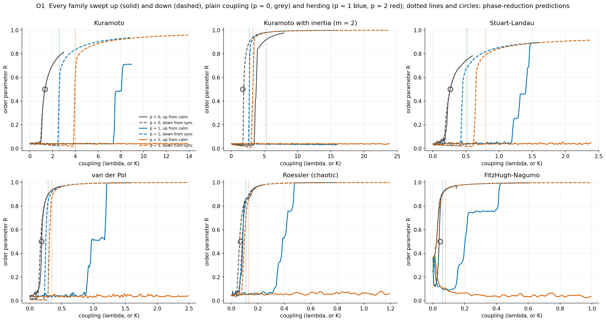
What you are seeing
One panel per family: R against coupling, mean of 4 seeds. Solid: up from calm; dashed: down from synchrony. Grey p = 0, blue p = 1, red p = 2. Dotted verticals: phase-reduction folds; circle: predicted onset at R = 0.5.
Significance
The same qualitative picture in every family: herding opens a bistable window. The downward collapses in this figure come later than the true folds because the sweep is finite (O3c).
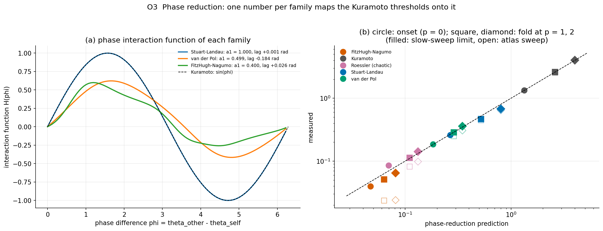
What you are seeing
(a) H(phi) of each family from the numerical adjoint. (b) Measured against predicted thresholds, log-log; filled: slow-sweep limit, open: atlas sweep.
Significance
One coefficient per family maps the Kuramoto thresholds onto it; the residual gaps of Stuart-Landau and FitzHugh-Nagumo mark where phase reduction stops being accurate.
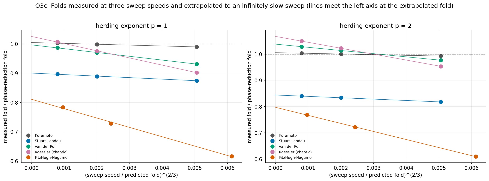
What you are seeing
Measured fold divided by the phase-reduction fold against (speed / fold)^(2/3); lines: fits, meeting the left axis at the extrapolated fold.
Significance
Removes the largest systematic error of every threshold measured by sweeping.
| family | coupling | product-separable | separable rank |
|---|---|---|---|
| Kuramoto, with or without inertia | -sin(x - y) | no | 2 |
| Stuart-Landau population | -x + y | no | 2 |
| van der Pol population | -x + y | no | 2 |
| FitzHugh-Nagumo population | -x + y | no | 2 |
| Roessler population | -x + y | no | 2 |
| Winfree | -(cos(y) + 1)*sin(x) | yes | 1 |
| theta neurons (pulse coupling) | (1 - cos(y))**2*(2*cos(x)/3 + 2/3) | yes | 1 |
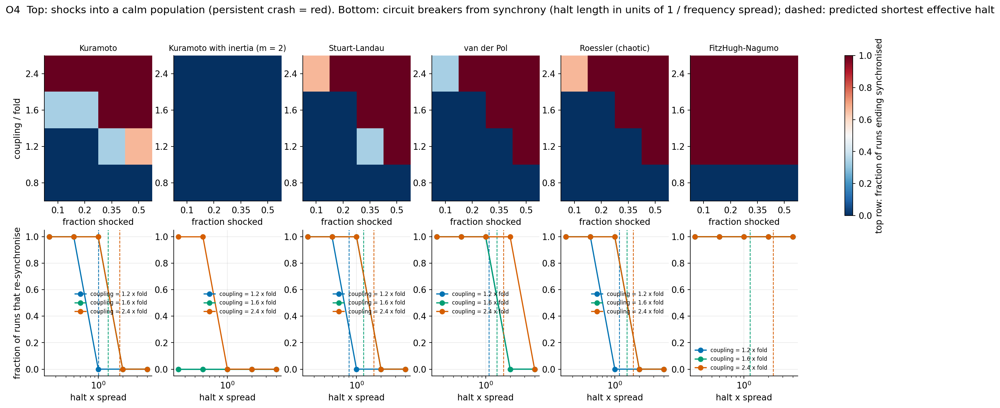
What you are seeing
Top row: fraction of runs that end synchronised after a fraction phi (horizontal) of a calm population is put at one phase, at couplings below and inside the bistable window (vertical, multiples of the slow-sweep fold). Bottom row: fraction of runs that re-synchronise after a halt of the given length (horizontal, log, in units of 1 / frequency spread); dashed: the halt predicted by phase reduction.
Significance
Whether shocks and halts act the same way in every family, and whether the halt length can be predicted from the frequencies alone.
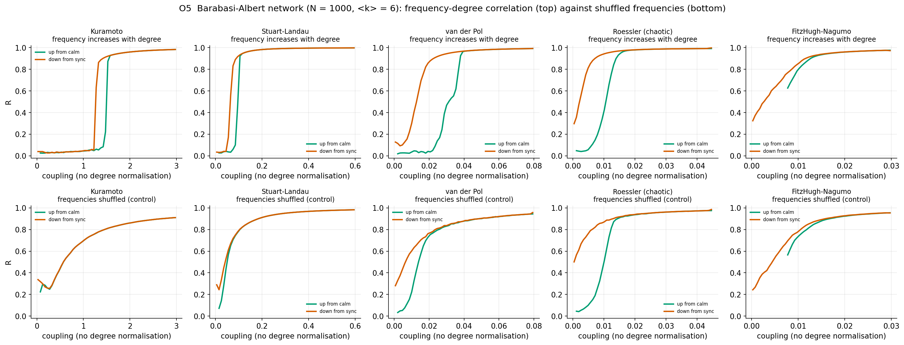
What you are seeing
R against unnormalised coupling on one Barabasi-Albert network; green: swept up from calm, red: down from synchrony. Top: frequency increasing with degree (the Gomez-Gardenes condition); bottom: the same frequencies shuffled.
Significance
A gap between the green and red curves is hysteresis, the signature of explosive synchronisation; the shuffled control shows how much of it comes from the frequency-degree correlation.
Designed but not yet run (moved to the Ada cluster)
These steps of the pipeline are written and documented in README.md, but their full runs need more than this workstation; ADA_COMPUTE.md gives the cost and the SLURM script. Their results appear here and on reference.html when the pages are rebuilt.
- O6: herding fold on sparse random regular graphs against 1/k, every family (item A7)
Which warning works before which oscillator transition
resultEighteen transitions in eleven oscillator models plus the Ornstein-Uhlenbeck reference (fourteen, and the herding collapse added later for van der Pol, Roessler, FitzHugh-Nagumo and Kuramoto with inertia), all analysed with one pipeline. For each: 48 runs in which the control parameter ramps slowly toward the transition, and two kinds of null run of the same length. Question: which early-warning indicator rises before which transition, and is the warning carried by the collective signal or by single units?
The models
| model | equation (noise terms written as sigma xi) | control parameter and transition |
|---|---|---|
| Ornstein-Uhlenbeck | x' = -kappa x + sigma xi | kappa from 1 down to 0: the textbook loss of stability with a real eigenvalue. Reference case. |
| Simple harmonic oscillator | x'' + g x' + x = sigma xi | damping g from 1 to 0: the rest state loses stability through a complex pair of eigenvalues (a linear Hopf point). |
| Stuart-Landau | z' = (mu + i w) z - |z|^2 z + sigma (xi1 + i xi2) | mu from -1 to 0: supercritical Hopf bifurcation, the normal form of every smooth oscillation onset. |
| FitzHugh-Nagumo | v' = v - v^3/3 - w + I + sigma xi, w' = 0.08 (v + 0.7 - 0.8 w) | current I up: excitable rest state to spiking; the small cycle explodes into full spikes (canard explosion), an abrupt single-unit transition. |
| Kuramoto | theta_j' = w_j + K R sin(Psi - theta_j) + sigma xi_j | K up through Kc = 2(gamma + sigma^2/2): continuous synchrony onset. |
| Kuramoto, adaptive | theta_j' = w_j + lam R^2 sin(Psi - theta_j) + sigma xi_j | lam down through the fold lamb = 3 sqrt(3)(gamma + sigma^2/2): explosive desynchronisation, the model of a crash used in the rest of the project. |
| Kuramoto with inertia | 2 theta_j'' + theta_j' = w_j + K R sin(Psi - theta_j) + sigma xi_j | K down: hysteretic desynchronisation (the swing equation of power grids). |
| Stuart-Landau population | z_j' = (1 + i w_j - |z_j|^2) z_j + K rho^p (Z - z_j) + noise | p = 0, narrow frequencies: synchrony onset. p = 1 (rho = |Z| / mean |z_j|): explosive desynchronisation. p = 0, frequencies spread over [-4, 4]: amplitude death, every unit stops oscillating. |
| Winfree | theta_j' = w_j - kappa sin(theta_j) mean_k(1 + cos theta_k) + sigma xi_j | kappa up: oscillator death, the whole population stops at a fixed point (a collective saddle-node on the circle). |
| van der Pol population | x_j'' - (1 - x_j^2) x_j' + w_j^2 x_j = K (V - x_j') + sigma xi_j | K up: frequency synchrony of relaxation-type oscillators. |
| Roessler population | x' = -w y - z + K (X - x), y' = w x + 0.15 y, z' = 0.2 + z (x - 10) | K up: phase synchronisation of chaotic oscillators; the chaos itself acts as noise. |
| Theta neurons | theta_j' = (1 - cos theta_j) + (1 + cos theta_j)(eta_j + J S) + sigma xi_j | mean drive down: the high-activity state of a bistable network collapses at a fold. |
Method
- Ramp. The control parameter moves linearly from a stable value through the transition. The analysed segment runs from the end of an 8% burn-in to 25 time units before the transition (the theoretical critical point for continuous transitions, the detected jump for abrupt ones). Signals are sampled every 0.5 time units.
- Nulls. Parameter held fixed: the same model at the starting value. Ramp away: the parameter moves by the same amount at the same rate, but away from the transition. The second null is the stricter one. An indicator that simply grows whenever the parameter changes scores 0.5 against it; only an indicator that rises specifically toward the transition scores high. (The earlier model study S6 used only the first kind and could not rank indicators.)
- Indicators on the detrended segment (Gaussian smoothing, bandwidth 10% of the segment), in a rolling
window of half the segment: variance, lag-1 autocorrelation, absolute skewness, peak of the power spectrum,
and two eigenvalue estimators. The AR(2) decay rate fits
x_t = a1 x_(t-1) + a2 x_(t-2) + e_tand reportsln max|root| / dt, the decay rate of the slowest mode, which rises to 0 at any loss of stability. The VAR(1) decay rate does the same for eight units jointly. - Score. Kendall's tau of each rolling indicator against time (positive = rising). ROC AUC: the probability that a randomly chosen ramp run has a larger tau than a randomly chosen null run. 1 means it always warns, 0.5 means chance, 0 means it always falls before the transition.
- Signals. Collective: the scenario's mean-field signal (Re Z before an onset, |Z| or mean amplitude on a synchronised branch, the activity S for theta neurons). One unit: the signal of oscillator 0. 8 units: oscillators 0 to 7 together (VAR(1) only). N = 400 oscillators per population, noise sigma = 0.1.
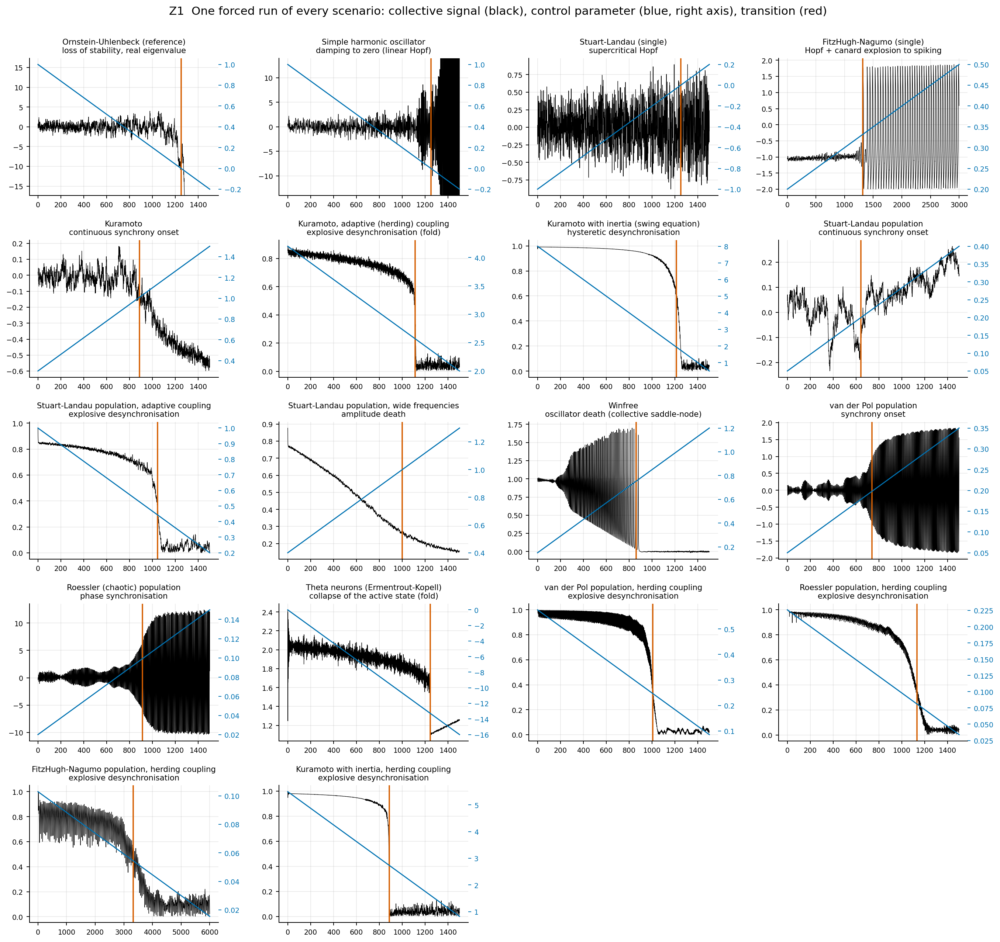
What you are seeing
One panel per scenario. Black: the collective signal that the indicators are computed on. Blue (right axis): the control parameter, ramped linearly. Red vertical line: the transition used to cut the segment (the theoretical critical point for continuous transitions, the detected jump for abrupt ones). Time on the horizontal axis. In the first two panels (Ornstein-Uhlenbeck and harmonic oscillator) the system diverges after the critical point because nothing limits it, so the vertical axis is scaled to the approach.
Significance
Shows that every transition is real and is detected where theory says: the adaptive Kuramoto collapse happens just below its predicted fold, Kuramoto onset at Kc, Winfree death once the oscillation slows to a stop. Only the data left of the red line are used for warnings.
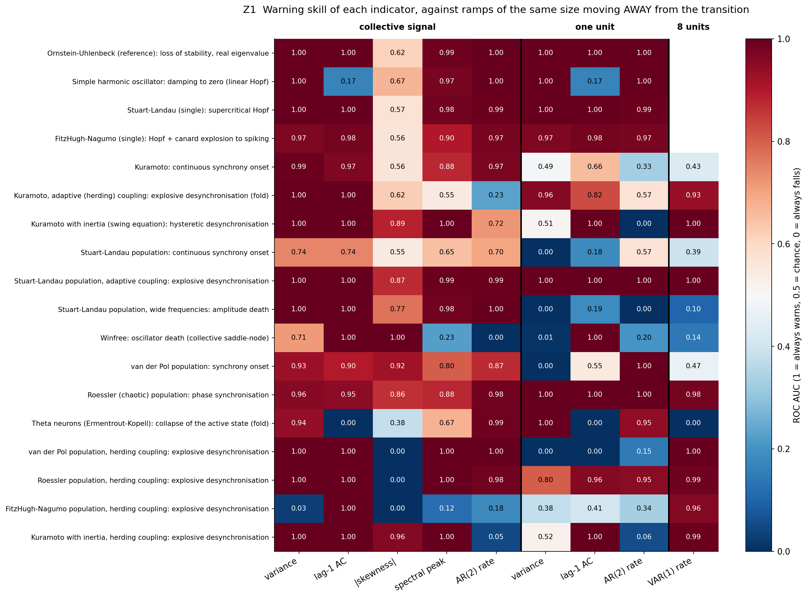
What you are seeing
Rows: the 18 scenarios. Columns: indicators, grouped (thick black lines) into those computed on the collective signal (left five), on one unit (next three) and on eight units jointly (last). Colour and number: ROC AUC from 48 ramp runs against 48 null runs. Dark red = the indicator rises before the transition in essentially every run; white = no information; dark blue = it reliably falls. Blank cells: the single-unit models have no separate unit or group signal.
Significance
Variance of the collective signal warned in 17 of 18 scenarios (AUC 0.7 or more), more than any other indicator, but it fell instead of rising before FitzHugh-Nagumo, herding, collapse (AUC 0.03). No indicator warned everywhere. Every other indicator fails or reverses somewhere. Single units often show the opposite of a warning: their variance falls before amplitude death, van der Pol and Stuart-Landau synchrony and Winfree death, because what changes at a collective transition is the mean field, while each unit keeps oscillating on its own cycle.
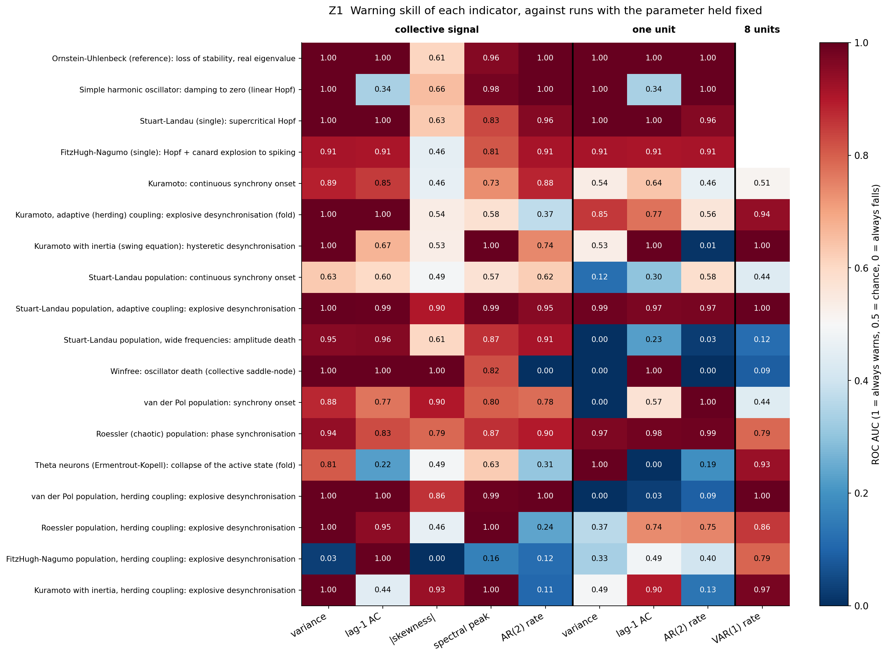
What you are seeing
Same layout as the previous figure; the null runs keep the parameter at its starting value.
Significance
Mostly the same picture. Where the two figures differ (for example Winfree collective variance: 1.00 here, lower against the strict null) part of the rise comes from the parameter change itself rather than from the approach to the transition. The strict null is the one to quote.
Variance: collective signal against one unit, every scenario
Columns: AUC of the collective variance and of one unit's variance against each null, and the control parameter at the detected transition (mean and standard deviation over the 48 ramp runs).
| scenario | collective, vs ramp away | collective, vs fixed | one unit, vs ramp away | one unit, vs fixed | parameter at transition | sd |
|---|---|---|---|---|---|---|
| Ornstein-Uhlenbeck (reference) | 1.000 | 1.000 | 1.000 | 1.000 | 0.000 | 0.000 |
| Simple harmonic oscillator | 1.000 | 0.999 | 1.000 | 0.999 | 0.000 | 0.000 |
| Stuart-Landau, single | 1.000 | 1.000 | 1.000 | 1.000 | 0.000 | 0.000 |
| FitzHugh-Nagumo, single | 0.968 | 0.911 | 0.968 | 0.911 | 0.322 | 0.012 |
| Kuramoto, onset | 0.991 | 0.888 | 0.488 | 0.535 | 1.010 | 0.000 |
| Kuramoto, adaptive, collapse | 1.000 | 1.000 | 0.959 | 0.853 | 2.571 | 0.007 |
| Kuramoto with inertia, collapse | 1.000 | 1.000 | 0.515 | 0.534 | 1.931 | 0.006 |
| Stuart-Landau population, onset | 0.745 | 0.629 | 0.002 | 0.123 | 0.200 | 0.000 |
| Stuart-Landau, adaptive, collapse | 1.000 | 1.000 | 1.000 | 0.987 | 0.444 | 0.004 |
| Stuart-Landau, amplitude death | 1.000 | 0.954 | 0.000 | 0.000 | 1.000 | 0.000 |
| Winfree, oscillator death | 0.713 | 1.000 | 0.009 | 0.000 | 0.755 | 0.003 |
| van der Pol population, onset | 0.927 | 0.877 | 0.000 | 0.000 | 0.197 | 0.006 |
| Roessler population, phase sync | 0.955 | 0.940 | 0.998 | 0.968 | 0.090 | 0.005 |
| Theta neurons, collapse of activity | 0.939 | 0.805 | 1.000 | 0.997 | -13.316 | 0.066 |
| van der Pol, herding, collapse | 1.000 | 1.000 | 0.000 | 0.000 | 0.248 | 0.001 |
| Roessler, herding, collapse | 1.000 | 1.000 | 0.804 | 0.365 | 0.081 | 0.000 |
| FitzHugh-Nagumo, herding, collapse | 0.030 | 0.028 | 0.377 | 0.335 | 0.055 | 0.001 |
| Kuramoto with inertia, herding, collapse | 1.000 | 1.000 | 0.522 | 0.492 | 2.735 | 0.005 |
The exception: FitzHugh-Nagumo herding collapse
The collective variance falls before this collapse. The phase of a FitzHugh-Nagumo unit is event based, so R carries a ripple at the spiking period (about 37 time units), which dominates its variance and shrinks as the units drift apart. Rerun of the scenario (100 runs, z1_fhn_period.py) with every indicator computed on R as before and on R averaged over one spike period; AUC against the strict null:
| indicator | R as in Z1 | R averaged over one spike period |
|---|---|---|
| lag-1 autocorrelation | 1.000 | 0.812 |
| AR(2) decay rate | 0.205 | 0.849 |
| |skewness| | 0.002 | 0.479 |
| spectral peak | 0.103 | 0.711 |
| variance | 0.021 | 0.863 |
| VAR(1) decay rate | - | - |
Averaging over the cycle restores the variance warning: the slow mode is there, hidden by the ripple. For relaxation oscillators the indicators have to be computed on the cycle-averaged collective signal. The failure also depends on noise: at sigma = 0.05 the raw collective variance warns (section C).
Where each indicator fails (AUC below 0.3 against the strict null)
| signal | indicator | scenarios failed | which |
|---|---|---|---|
| collective | variance | 1 | FitzHugh-Nagumo, herding, collapse |
| collective | lag-1 autocorrelation | 2 | Simple harmonic oscillator, Theta neurons, collapse of activity |
| collective | spectral peak | 2 | FitzHugh-Nagumo, herding, collapse, Winfree, oscillator death |
| collective | |skewness| | 3 | FitzHugh-Nagumo, herding, collapse, Roessler, herding, collapse, van der Pol, herding, collapse |
| collective | AR(2) decay rate | 4 | FitzHugh-Nagumo, herding, collapse, Kuramoto with inertia, herding, collapse, Kuramoto, adaptive, collapse, Winfree, oscillator death |
| one unit | |skewness| | 2 | Roessler, herding, collapse, Roessler population, phase sync |
| one unit | lag-1 autocorrelation | 5 | Simple harmonic oscillator, Stuart-Landau, amplitude death, Stuart-Landau population, onset, Theta neurons, collapse of activity, van der Pol, herding, collapse |
| one unit | AR(2) decay rate | 5 | Kuramoto with inertia, herding, collapse, Kuramoto with inertia, collapse, Stuart-Landau, amplitude death, van der Pol, herding, collapse, Winfree, oscillator death |
| one unit | spectral peak | 5 | Stuart-Landau, amplitude death, Stuart-Landau population, onset, Theta neurons, collapse of activity, van der Pol population, onset, Winfree, oscillator death |
| one unit | variance | 5 | Stuart-Landau, amplitude death, Stuart-Landau population, onset, van der Pol, herding, collapse, van der Pol population, onset, Winfree, oscillator death |
Lag-1 autocorrelation: why it fails for a mechanical oscillator, and when it works
theory confirmedresultWhy lag-1 autocorrelation failed for the simple harmonic oscillator in Z1, worked out exactly and confirmed by simulation. The answer depends on which coordinate is observed, and the position of a noise-driven mechanical oscillator never gives the warning.
Theory
For x'' + g x' + w0^2 x = sigma xi (noise enters the force, i.e. the velocity equation), the
stationary autocorrelation at lag tau, with w' = sqrt(w0^2 - g^2/4), is
velocity: ACv(tau) = e-g tau/2 [cos w' tau - (g / 2w') sin w' tau]
Differentiating at g = 0 with x = w0 tau (checked symbolically and against the exact Lyapunov covariance,
z3_theory.py):
dACv/dg = -(sin x + x cos x) / 2w0, negative for 0 < x < 2.029
Stuart-Landau, AC = emu tau cos w0 tau: rises as mu goes to 0 for x < pi/2
A warning needs the autocorrelation to rise as the damping falls. For the position it falls at every lag up to 4.49/w0, beyond the Nyquist limit pi/w0: no sampling interval gives a warning. For the velocity it rises up to 2.03 (1.78 over the whole ramp from g = 1). For the Stuart-Landau signal up to a quarter period, which Bury, Bauch and Anand (J. R. Soc. Interface 17, 20200482, 2020) already pointed out for the Hopf normal form. The position and velocity results for a forced mechanical oscillator are not stated in the papers our search found; that search was not exhaustive.
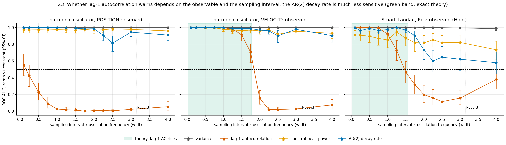
What you are seeing
Horizontal axis: sampling interval times the oscillation frequency, w dt (pi = Nyquist limit, dotted line). Vertical axis: ROC AUC of 40 ramp runs against 40 constant runs (95% bootstrap CI). Red: lag-1 autocorrelation. Blue: AR(2) decay rate. Orange: spectral peak power. Grey: variance. Green band: where the exact theory says lag-1 autocorrelation rises over the ramp. Dashed line: chance.
Significance
The simulated lag-1 autocorrelation follows the theory: it fails at every interval for the position, works for the velocity until w dt = 1.75 and fails from 2.0 (theory 1.78), and works for the Stuart-Landau signal until about 1.25. Variance and spectral peak warn throughout; the AR(2) rate warns throughout for the harmonic oscillator and loses precision near Nyquist for Stuart-Landau.
AUC values
| w dt | position, lag-1 AC | position, AR(2) | velocity, lag-1 AC | velocity, AR(2) | Stuart-Landau, lag-1 AC | Stuart-Landau, AR(2) |
|---|---|---|---|---|---|---|
| 0.10 | 0.55 | 1.00 | 1.00 | 1.00 | 1.00 | 1.00 |
| 0.25 | 0.42 | 1.00 | 1.00 | 1.00 | 1.00 | 0.96 |
| 0.50 | 0.23 | 1.00 | 1.00 | 1.00 | 1.00 | 0.99 |
| 0.75 | 0.09 | 1.00 | 1.00 | 1.00 | 1.00 | 0.96 |
| 1.00 | 0.03 | 1.00 | 1.00 | 1.00 | 0.92 | 0.98 |
| 1.25 | 0.02 | 1.00 | 0.98 | 0.99 | 0.73 | 1.00 |
| 1.50 | 0.01 | 0.99 | 0.92 | 0.99 | 0.47 | 0.97 |
| 1.75 | 0.00 | 0.98 | 0.70 | 0.99 | 0.32 | 0.90 |
| 2.00 | 0.01 | 0.99 | 0.16 | 0.97 | 0.20 | 0.73 |
| 2.25 | 0.01 | 0.91 | 0.02 | 0.96 | 0.16 | 0.60 |
| 2.50 | 0.01 | 0.81 | 0.02 | 0.90 | 0.11 | 0.65 |
| 3.00 | 0.02 | 0.94 | 0.03 | 0.98 | 0.16 | 0.62 |
| 4.00 | 0.05 | 0.91 | 0.08 | 0.90 | 0.38 | 0.58 |
The crash model: critical slowing down before explosive desynchronisation
theory confirmedresultThe crash model of this project is the collapse of the synchronised branch of the adaptive Kuramoto model. Ott-Antonsen theory gives that branch exactly, so the warning before the collapse can be predicted, not just measured. Three things were tested: whether the slow mode is there, how large the warning is, and when a slowly driven finite population actually collapses.
Theory
branch: gamma' = (lam/2) R (1 - R2), fold at lamb = 3 sqrt(3) gamma' = 2.6241, Rb = 1/sqrt(3)
relaxation rate on the branch: kappa(lam) = gamma' - (lam/2)(2R - 4R3), which vanishes like sqrt(lam - lamb)
If finite-size fluctuations of R were a single slow mode of rate kappa: N Var(R) proportional to 1/kappa, correlation time 1/kappa, and power at low frequency proportional to 1/kappa2.
Results
- The branch is exact. Mean R from simulation matches the theory within 0.43% at every N and distance from the fold.
- The slow mode is there. Low-frequency power of R scales as kappa-2.44 (theory -2), collapsing for N = 200, 800 and 3200.
- But it is diluted. Total variance and correlation time scale only as kappa-0.48 and kappa-0.52, not kappa-1: most of the fluctuation of R comes from fast contributions of drifting oscillators, which do not slow down. An indicator computed on R sees a weakened version of the critical slowing down.
- Collapse comes after the fold, not before. In every ramp run the population stays on the branch past lamb. The delay grows with ramp speed as speed0.646 (95% CI 0.611 to 0.686), consistent with the 2/3 law of slow passage through a saddle-node. At noise sigma = 0.1 we see no sign of the opposite effect, finite-size noise tipping the system early (predicted to shift the collapse by order N-2/3).
- The warning is small. In the last 40 time units before the population leaves the branch, the variance of R is only 1.2 to 2.1 times its value far from the fold (N = 100 to 12800), although the theoretical relaxation time diverges at the fold.
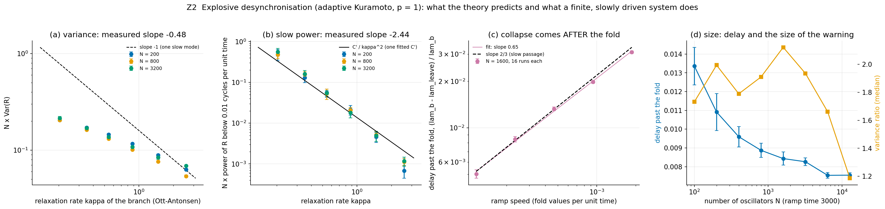
What you are seeing
(a) N times the variance of R on the synchronised branch against the theoretical relaxation rate kappa (log-log), for three population sizes; dashed: slope -1 expected for a single slow mode. (b) Low-frequency power of R (below 0.01 cycles per time unit), times N; black: C'/kappa2 with one fitted constant. (c) In slow downward ramps, how far below the fold the population leaves the branch (fraction of lamb) against ramp speed (N = 1600, 16 runs per speed, mean and standard error); dashed: slope 2/3. (d) Blue: the same delay against N at fixed ramp time 3000. Orange (right axis): variance of R just before leaving the branch divided by its value far from the fold (median over 16 runs).
Significance
The theory of the branch is right, and so is the slow mode underneath. What reaches an observer is weaker: the slow mode is buried under fast fluctuations, and a system driven at a finite rate overshoots the fold and collapses late, so the variance never gets far above its baseline. For the market picture this means the explosive-collapse model predicts at most a modest rise in variance before a crash, which is what the data show (M1, M4).
Stationary runs, largest N
| (lam - lam_b) / lam_b | R simulated | R theory | N Var(R) | correlation time | N x low-frequency power | kappa (theory) |
|---|---|---|---|---|---|---|
| 0.0200 | 0.6394 | 0.6422 | 0.2152 | 0.6592 | 0.5586 | 0.2038 |
| 0.0500 | 0.6755 | 0.6774 | 0.1696 | 0.4461 | 0.1608 | 0.3513 |
| 0.1000 | 0.7127 | 0.7142 | 0.1368 | 0.3590 | 0.0544 | 0.5465 |
| 0.2000 | 0.7591 | 0.7604 | 0.1083 | 0.2789 | 0.0179 | 0.8793 |
| 0.4000 | 0.8125 | 0.8137 | 0.0844 | 0.2240 | 0.0050 | 1.4743 |
| 0.8000 | 0.8670 | 0.8682 | 0.0687 | 0.1996 | 0.0012 | 2.5856 |
Ramp speed and delay past the fold (N = 1600)
| ramp time | speed (fold values per time unit) | delay past the fold | sd | runs |
|---|---|---|---|---|
| 375.00000 | 0.00187 | 0.03082 | 0.00261 | 16 |
| 750.00000 | 0.00093 | 0.01978 | 0.00177 | 16 |
| 1500.00000 | 0.00047 | 0.01325 | 0.00144 | 16 |
| 3000.00000 | 0.00023 | 0.00843 | 0.00141 | 16 |
| 6000.00000 | 0.00012 | 0.00503 | 0.00126 | 16 |
The size of the delay, with no free parameter (O3d)
The Ott-Antonsen equation is exact for this model at large N, so integrating it along exactly the same ramps and applying the same detection rule predicts the delay itself (near the fold this is the slow passage through a saddle-node, Delta lam = Omega_0 v^(2/3) (2 / (F_lam lam_b))^(1/3), Omega_0 = 2.338, the first zero of the Airy function). Z2 runs at N = 1600: the measured delay changes 6-fold with the ramp speed, while the difference from the prediction (offset) stays constant: a fixed, speed-independent shift of the finite, noisy population's fold of about 0.1%.
| ramp time | speed | measured delay | predicted | predicted minus measured |
|---|---|---|---|---|
| 375.0000 | 0.0049 | 0.0809 | 0.0837 | 0.0028 |
| 750.0000 | 0.0024 | 0.0519 | 0.0560 | 0.0041 |
| 1500.0000 | 0.0012 | 0.0348 | 0.0373 | 0.0025 |
| 3000.0000 | 0.0006 | 0.0221 | 0.0248 | 0.0027 |
| 6000.0000 | 0.0003 | 0.0132 | 0.0164 | 0.0032 |
O3c Kuramoto runs (N = 500), delay measured from the fold this population was extrapolated to:
| p | sweep time | speed | measured delay | predicted |
|---|---|---|---|---|
| 1 | 2500.0000 | 0.0009 | 0.0383 | 0.0351 |
| 1 | 10000.0000 | 0.0002 | 0.0171 | 0.0150 |
| 1 | 40000.0000 | 0.0001 | 0.0049 | 0.0062 |
| 2 | 2500.0000 | 0.0014 | 0.0515 | 0.0473 |
| 2 | 10000.0000 | 0.0004 | 0.0195 | 0.0189 |
| 2 | 40000.0000 | 0.0001 | 0.0087 | 0.0075 |
Market data audit and cleaning
data qualityThe 22 daily stock panels (Yahoo adjusted closes of today's constituents, 2000 to 2026) were audited before any new test. Earlier studies in this repository (E1, E1c) used them uncleaned.
| rule | what it catches | what is removed |
|---|---|---|
| R1 non-positive price | Yahoo's dividend back-adjustment drives some early adjusted prices below zero (ABI.BR: negative for 2070 days) | every price of that stock up to its last non-positive date |
| R2 holiday filler row | days on which more than 80% of stocks show exactly zero return: local holidays filled forward by the vendor | the whole day |
| R3 stale run | 10 or more identical consecutive prices: suspension or delisting filled forward | those prices after the first |
| R4 one-day spike | a move of more than 25% that reverses the next day (within 25% of its size): a bad tick | that day's price |
| R5 split error | a move of more than 50% whose ratio is within 2% of a split ratio (2, 3, 4, 5, 8, 10, ... 100) | that return; price levels kept |
| R6 level break | a move by more than a factor e = 2.72 in one day: unadjusted splits with odd ratios, redenominations, mergers (BRKM5.SA: 1.24 million to 0.068) | that return; price levels kept |
Crypto keeps R1 to R4 only: moves larger than 50% are real there. The world index panel is audited in M3.
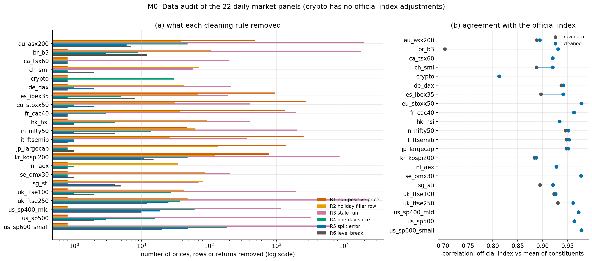
What you are seeing
(a) For each market, how many prices (R1, R3, R4), whole days (R2) or returns (R5, R6) each rule removed; log scale, so a bar at 1 means none. (b) Correlation between the daily returns of the official index and the equal-weight mean of the constituents' returns, before (grey) and after (blue) cleaning. A low value means the constituent data disagree with the index.
Significance
Cleaning never lowers the agreement with the official index and raises it clearly in five markets (Brazil 0.70 to 0.93, Spain, Switzerland, Singapore, FTSE 250). It removes 0.03% to 6.4% of the data per market. The remaining weak spots are inherent: survivorship (only today's constituents, see the last column) and crypto, whose index has a different composition.
| market | stocks | R1 | R2 | R3 | R4 | R5 | R6 | fraction removed | index agreement, raw | index agreement, clean | stocks with data in 2000 |
|---|---|---|---|---|---|---|---|---|---|---|---|
| au_asx200 | 196 | 484 | 38 | 19951 | 48 | 6 | 7 | 0.025 | 0.888 | 0.895 | 0.444 |
| br_b3 | 69 | 0 | 108 | 18073 | 9 | 3 | 12 | 0.064 | 0.704 | 0.931 | 0.362 |
| ca_tsx60 | 59 | 0 | 0 | 196 | 0 | 0 | 0 | 0.001 | 0.920 | 0.920 | 0.644 |
| ch_smi | 20 | 0 | 72 | 57 | 0 | 0 | 2 | 0.011 | 0.888 | 0.921 | 0.800 |
| crypto | 40 | 0 | 0 | 0 | 30 | 0 | 0 | 0.000 | 0.812 | 0.813 | 0.050 |
| de_dax | 40 | 0 | 42 | 210 | 1 | 2 | 0 | 0.006 | 0.938 | 0.942 | 0.700 |
| es_ibex35 | 35 | 943 | 69 | 190 | 5 | 0 | 8 | 0.013 | 0.897 | 0.941 | 0.371 |
| eu_stoxx50 | 50 | 2779 | 31 | 403 | 1 | 2 | 0 | 0.014 | 0.978 | 0.978 | 0.780 |
| fr_cac40 | 40 | 1324 | 37 | 1968 | 3 | 0 | 0 | 0.017 | 0.963 | 0.963 | 0.775 |
| hk_hsi | 85 | 0 | 92 | 402 | 4 | 1 | 1 | 0.008 | 0.934 | 0.934 | 0.271 |
| in_nifty50 | 50 | 47 | 63 | 2042 | 14 | 1 | 4 | 0.014 | 0.946 | 0.952 | 0.380 |
| it_ftsemib | 40 | 2515 | 26 | 362 | 1 | 1 | 0 | 0.016 | 0.948 | 0.953 | 0.300 |
| jp_largecap | 60 | 1364 | 135 | 0 | 0 | 0 | 1 | 0.023 | 0.948 | 0.951 | 0.767 |
| kr_kospi200 | 200 | 778 | 124 | 8608 | 48 | 11 | 15 | 0.023 | 0.884 | 0.887 | 0.455 |
| nl_aex | 25 | 0 | 35 | 0 | 1 | 0 | 0 | 0.004 | 0.928 | 0.928 | 0.520 |
| se_omx30 | 30 | 0 | 88 | 206 | 0 | 0 | 1 | 0.013 | 0.977 | 0.977 | 0.733 |
| sg_sti | 30 | 0 | 81 | 70 | 0 | 4 | 5 | 0.009 | 0.895 | 0.921 | 0.500 |
| uk_ftse100 | 100 | 0 | 42 | 1972 | 27 | 1 | 2 | 0.009 | 0.923 | 0.926 | 0.710 |
| uk_ftse250 | 250 | 0 | 48 | 22997 | 37 | 25 | 12 | 0.023 | 0.931 | 0.962 | 0.512 |
| us_sp400_mid | 400 | 0 | 0 | 1152 | 61 | 19 | 10 | 0.001 | 0.972 | 0.973 | 0.552 |
| us_sp500 | 503 | 0 | 0 | 3281 | 16 | 3 | 2 | 0.001 | 0.964 | 0.964 | 0.704 |
| us_sp600_small | 602 | 0 | 0 | 6437 | 182 | 49 | 20 | 0.002 | 0.978 | 0.978 | 0.478 |
Five of the 38 world indices (Egypt CASE30, Chile IPSA, Thailand SET, Philippines PSEi, Poland WIG20) have no history on Yahoo; a fresh download on 2026-10-25 confirmed it. Euro Stoxx 50, OMX, Oslo and Nifty start between 2007 and 2013 there.
Real markets: oscillator-motivated warnings, registered in advance
negative resultThree indicators that come from the oscillator picture, fixed in
DESIGN_MARKETS.md before the run, tested before 310 crash onsets in 22
markets (67 distinct calendar quarters), on cleaned data.
- AR(2) decay rate of the index's daily returns (the damped-oscillator eigenvalue).
- VAR(1) eigenvalue: largest |eigenvalue| of a VAR(1) fitted to the top three principal components of the constituents' returns (the coupled-system eigenvalue). Primary hypothesis: its 250-day trend separates crash onsets from peaks not followed by a crash.
- Hilbert phase synchrony: Kuramoto order parameter of the constituents' Hilbert phases (log prices band-passed to periods of about 3 to 20 days, computed inside a trailing 120-day window so nothing after the date is used).
Crash onset: a 20-day high followed by a fall of at least 10% (30% for crypto) within 30 trading days. Nulls: all non-crash dates, volatility-matched dates, and 20-day highs that were not followed by a crash. Scores: the indicator's z-score against its own days t-500 to t-60 (level) and its Kendall trend over 250 days (trend). AUC with 95% CI from a bootstrap over calendar quarters on both sides. 18 registered tests, Benjamini-Hochberg at q = 0.05.
Result: no registered test survives the correction (0 of 18). The primary hypothesis gives AUC 0.503 [0.453, 0.549]. The four earlier indicators, recomputed on the cleaned data, reproduce the earlier E1c numbers: index variance and mean correlation separate crash onsets from ordinary dates (AUC around 0.6), but nothing separates them clearly from peaks that did not crash.
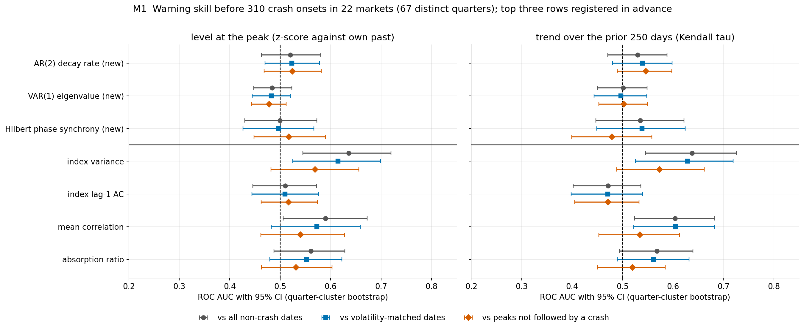
What you are seeing
Each row an indicator; the three new ones are above the black line, the earlier indicators below. Three markers per row, one per null set (legend). Horizontal position: ROC AUC with 95% CI. Left: level score; right: trend score. Dashed line: chance.
Significance
The new indicators sit on the chance line. Index variance and mean correlation are the only indicators clearly above 0.5, and only against all dates or volatility-matched dates. Against the null that matters for a usable warning (a peak that did not turn into a crash) every interval includes 0.5.
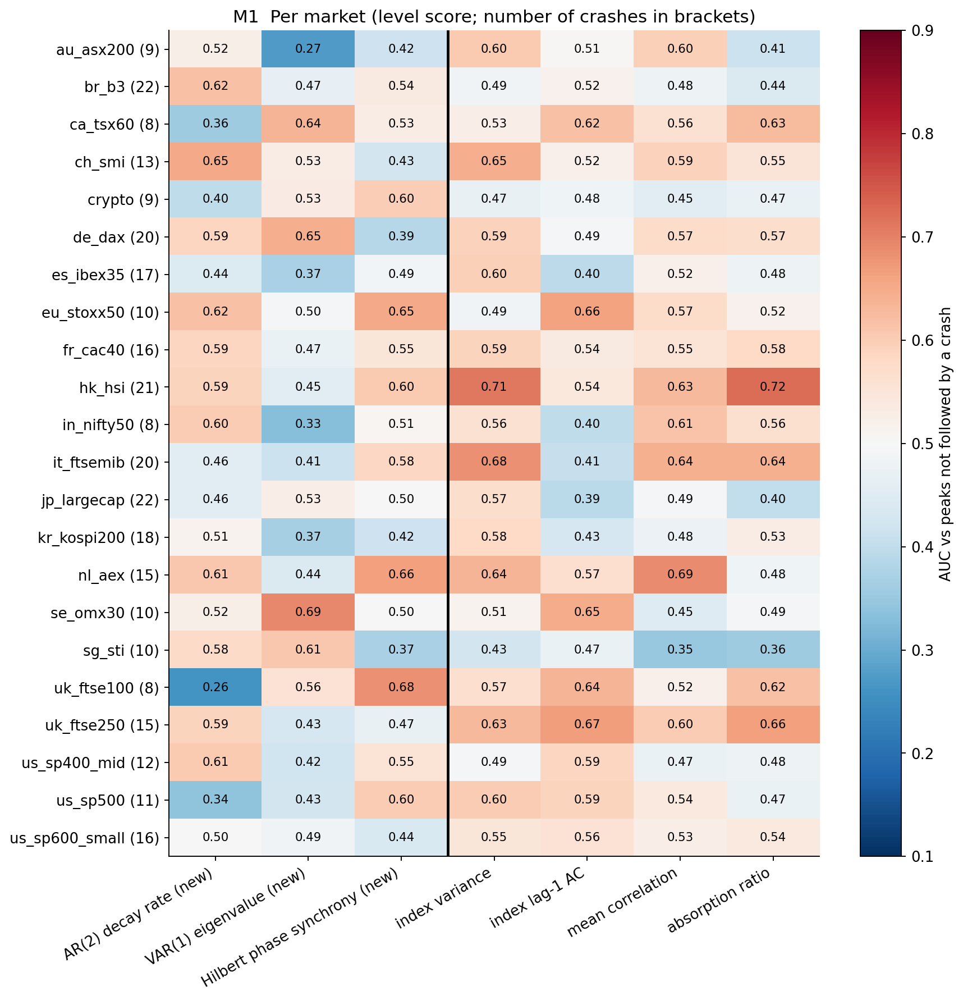
What you are seeing
Rows: markets (number of crash onsets in brackets). Columns: indicators, new ones left of the black line. Colour and number: AUC in that market alone. Red: higher before crashes; blue: lower.
Significance
No indicator is consistently red across markets. With 8 to 22 crashes per market, single-market AUCs between 0.3 and 0.7 are within sampling noise.
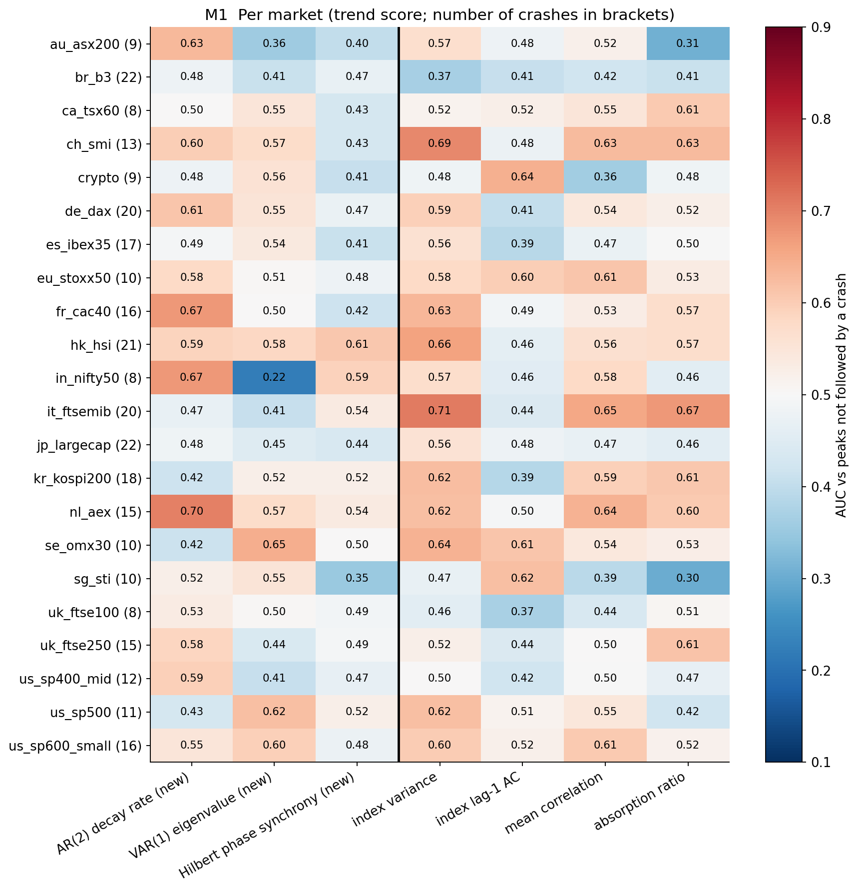
What you are seeing
As above, for the 250-day trend.
Significance
Same conclusion.
Registered tests
| indicator | score | null | AUC | CI low | CI high | p (one-sided) | p after BH | survives BH | events |
|---|---|---|---|---|---|---|---|---|---|
| AR(2) decay rate | trend | all non-crash dates | 0.530 | 0.471 | 0.588 | 0.157 | 0.505 | no | 310 |
| AR(2) decay rate | trend | volatility-matched dates | 0.539 | 0.480 | 0.598 | 0.097 | 0.505 | no | 310 |
| AR(2) decay rate | trend | peaks not followed by a crash | 0.546 | 0.490 | 0.597 | 0.053 | 0.505 | no | 310 |
| AR(2) decay rate | level | all non-crash dates | 0.520 | 0.463 | 0.580 | 0.225 | 0.505 | no | 310 |
| AR(2) decay rate | level | volatility-matched dates | 0.523 | 0.470 | 0.578 | 0.214 | 0.505 | no | 310 |
| AR(2) decay rate | level | peaks not followed by a crash | 0.525 | 0.468 | 0.581 | 0.204 | 0.505 | no | 310 |
| VAR(1) eigenvalue | trend | all non-crash dates | 0.502 | 0.450 | 0.549 | 0.486 | 0.697 | no | 301 |
| VAR(1) eigenvalue | trend | volatility-matched dates | 0.497 | 0.444 | 0.548 | 0.542 | 0.697 | no | 301 |
| VAR(1) eigenvalue | trend | peaks not followed by a crash | 0.503 | 0.453 | 0.549 | 0.466 | 0.697 | no | 301 |
| VAR(1) eigenvalue | level | all non-crash dates | 0.484 | 0.447 | 0.523 | 0.809 | 0.878 | no | 301 |
| VAR(1) eigenvalue | level | volatility-matched dates | 0.482 | 0.444 | 0.520 | 0.829 | 0.878 | no | 301 |
| VAR(1) eigenvalue | level | peaks not followed by a crash | 0.478 | 0.443 | 0.512 | 0.894 | 0.894 | no | 301 |
| Hilbert phase synchrony | trend | all non-crash dates | 0.535 | 0.447 | 0.622 | 0.213 | 0.505 | no | 301 |
| Hilbert phase synchrony | trend | volatility-matched dates | 0.539 | 0.449 | 0.624 | 0.185 | 0.505 | no | 301 |
| Hilbert phase synchrony | trend | peaks not followed by a crash | 0.479 | 0.399 | 0.558 | 0.704 | 0.845 | no | 301 |
| Hilbert phase synchrony | level | all non-crash dates | 0.499 | 0.430 | 0.573 | 0.506 | 0.697 | no | 299 |
| Hilbert phase synchrony | level | volatility-matched dates | 0.497 | 0.426 | 0.567 | 0.530 | 0.697 | no | 299 |
| Hilbert phase synchrony | level | peaks not followed by a crash | 0.517 | 0.448 | 0.590 | 0.307 | 0.615 | no | 299 |
Comparison indicators (not part of the test)
| indicator | score | null | AUC | CI low | CI high | p (one-sided) |
|---|---|---|---|---|---|---|
| index variance | trend | all non-crash dates | 0.638 | 0.546 | 0.726 | 0.003 |
| index variance | trend | volatility-matched dates | 0.629 | 0.526 | 0.719 | 0.009 |
| index variance | trend | peaks not followed by a crash | 0.574 | 0.488 | 0.662 | 0.054 |
| index variance | level | all non-crash dates | 0.636 | 0.545 | 0.720 | 0.002 |
| index variance | level | volatility-matched dates | 0.615 | 0.525 | 0.699 | 0.009 |
| index variance | level | peaks not followed by a crash | 0.569 | 0.482 | 0.656 | 0.058 |
| index lag-1 AC | trend | all non-crash dates | 0.471 | 0.402 | 0.536 | 0.799 |
| index lag-1 AC | trend | volatility-matched dates | 0.471 | 0.398 | 0.540 | 0.792 |
| index lag-1 AC | trend | peaks not followed by a crash | 0.471 | 0.405 | 0.532 | 0.812 |
| index lag-1 AC | level | all non-crash dates | 0.510 | 0.446 | 0.572 | 0.371 |
| index lag-1 AC | level | volatility-matched dates | 0.509 | 0.444 | 0.576 | 0.399 |
| index lag-1 AC | level | peaks not followed by a crash | 0.516 | 0.462 | 0.574 | 0.259 |
| mean correlation | trend | all non-crash dates | 0.604 | 0.524 | 0.683 | 0.008 |
| mean correlation | trend | volatility-matched dates | 0.605 | 0.522 | 0.682 | 0.007 |
| mean correlation | trend | peaks not followed by a crash | 0.534 | 0.453 | 0.613 | 0.191 |
| mean correlation | level | all non-crash dates | 0.590 | 0.506 | 0.672 | 0.019 |
| mean correlation | level | volatility-matched dates | 0.573 | 0.482 | 0.659 | 0.062 |
| mean correlation | level | peaks not followed by a crash | 0.540 | 0.462 | 0.627 | 0.165 |
| absorption ratio | trend | all non-crash dates | 0.568 | 0.494 | 0.639 | 0.035 |
| absorption ratio | trend | volatility-matched dates | 0.561 | 0.490 | 0.632 | 0.048 |
| absorption ratio | trend | peaks not followed by a crash | 0.519 | 0.450 | 0.585 | 0.282 |
| absorption ratio | level | all non-crash dates | 0.561 | 0.488 | 0.628 | 0.052 |
| absorption ratio | level | volatility-matched dates | 0.553 | 0.479 | 0.622 | 0.072 |
| absorption ratio | level | peaks not followed by a crash | 0.531 | 0.463 | 0.603 | 0.192 |
Real markets: crash depth, speed, recovery and future drawdowns
exploratorynegative resultQuestions not asked anywhere else in the repository, all exploratory (no correction for the number of correlations, so treat any single interval that excludes zero with suspicion). Every indicator is a z-score against its own past (days t-500 to t-60). "Partial" removes the part explained by the index variance z-score.
- Severity. At the crash onset, does the indicator relate to how deep the fall is (largest loss within 30 days) or how fast (days from peak to trough)?
- Recovery. Does it relate to how long the index takes to regain its pre-crash peak (censored at 750 days)?
- All dates. Does it correlate with the next 30 days' maximum drawdown? Computed per market, averaged over the 22 markets, CI from a bootstrap over quarters within each market.
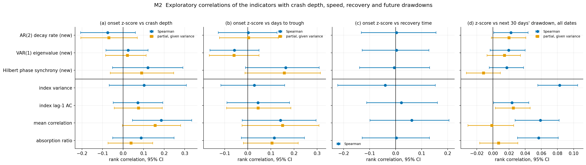
What you are seeing
Each row an indicator (new ones above the line). Blue circle: Spearman rank correlation with 95% bootstrap CI. Orange square: the partial correlation given the index variance z-score. Panels (a) to (d) are the targets listed above. The vertical line is zero.
Significance
(a) Mean correlation at the onset relates to the depth of the crash (0.19), but given variance the interval reaches zero: a hint, not a finding. (b, c) Nothing relates to the speed of the fall or the recovery time. (d) Several indicators correlate with future drawdowns, but every partial correlation given variance is near zero: whatever they know about the next month, variance already knows.
Severity
| indicator | target | Spearman | CI low | CI high | partial given variance | CI low | CI high | events |
|---|---|---|---|---|---|---|---|---|
| AR(2) decay rate | depth | -0.075 | -0.207 | 0.060 | -0.069 | -0.206 | 0.069 | 331 |
| AR(2) decay rate | days_to_trough | 0.002 | -0.128 | 0.126 | 0.004 | -0.122 | 0.132 | 331 |
| VAR(1) eigenvalue | depth | 0.024 | -0.083 | 0.122 | 0.021 | -0.085 | 0.112 | 320 |
| VAR(1) eigenvalue | days_to_trough | -0.058 | -0.164 | 0.048 | -0.059 | -0.167 | 0.049 | 320 |
| Hilbert phase synchrony | depth | 0.121 | -0.051 | 0.291 | 0.090 | -0.062 | 0.246 | 318 |
| Hilbert phase synchrony | days_to_trough | 0.164 | -0.010 | 0.309 | 0.158 | -0.012 | 0.314 | 318 |
| index variance | depth | 0.103 | -0.067 | 0.308 | - | - | - | 331 |
| index variance | days_to_trough | 0.028 | -0.116 | 0.159 | - | - | - | 331 |
| index lag-1 AC | depth | 0.072 | -0.048 | 0.193 | 0.075 | -0.043 | 0.191 | 331 |
| index lag-1 AC | days_to_trough | 0.044 | -0.090 | 0.181 | 0.045 | -0.091 | 0.187 | 331 |
| mean correlation | depth | 0.186 | 0.046 | 0.334 | 0.156 | -0.004 | 0.280 | 320 |
| mean correlation | days_to_trough | 0.142 | -0.024 | 0.295 | 0.150 | -0.025 | 0.308 | 320 |
| absorption ratio | depth | 0.088 | -0.050 | 0.248 | 0.039 | -0.073 | 0.144 | 320 |
| absorption ratio | days_to_trough | 0.115 | -0.027 | 0.245 | 0.105 | -0.019 | 0.218 | 320 |
Recovery time
| indicator | Spearman | CI low | CI high | events | not recovered in 750 days |
|---|---|---|---|---|---|
| AR(2) decay rate | 0.003 | -0.132 | 0.155 | 331 | 54 |
| VAR(1) eigenvalue | 0.003 | -0.129 | 0.128 | 320 | 54 |
| Hilbert phase synchrony | -0.005 | -0.138 | 0.130 | 318 | 54 |
| index variance | -0.040 | -0.222 | 0.152 | 331 | 54 |
| index lag-1 AC | 0.022 | -0.111 | 0.160 | 331 | 54 |
| mean correlation | 0.062 | -0.099 | 0.205 | 320 | 54 |
| absorption ratio | 0.003 | -0.129 | 0.130 | 320 | 54 |
Next 30 days' drawdown, all dates
| indicator | mean Spearman | CI low | CI high | partial given variance | CI low | CI high | markets with positive value | markets |
|---|---|---|---|---|---|---|---|---|
| AR(2) decay rate | 0.022 | 0.001 | 0.044 | 0.020 | -0.002 | 0.041 | 16 | 22 |
| VAR(1) eigenvalue | 0.019 | -0.003 | 0.040 | 0.014 | -0.007 | 0.034 | 15 | 22 |
| Hilbert phase synchrony | 0.017 | -0.005 | 0.038 | -0.012 | -0.033 | 0.009 | 13 | 22 |
| index variance | 0.083 | 0.056 | 0.105 | - | - | - | 21 | 22 |
| index lag-1 AC | 0.024 | 0.001 | 0.045 | 0.025 | 0.003 | 0.046 | 15 | 22 |
| mean correlation | 0.059 | 0.028 | 0.082 | -0.001 | -0.031 | 0.026 | 19 | 22 |
| absorption ratio | 0.057 | 0.030 | 0.081 | 0.007 | -0.016 | 0.031 | 17 | 22 |
Real markets: are the world's markets synchronised before global crashes?
exploratorynegative resultIf the world's markets are coupled oscillators, global crashes might be preceded by rising phase synchrony across countries. Tested on 33 national indices (the world panel minus five with no data).
Global index: equal-weight mean of the indices' daily log returns. Global crash: the same onset rule as M1, which finds 12 onsets from 2000 to 2026. World phase synchrony: Kuramoto order parameter of the indices' Hilbert phases (as in M1). World correlation: mean pairwise correlation of 5-day returns over 120 days (5-day returns remove most of the time-zone offset between Asia, Europe and America). Holidays: price levels carried forward for up to 3 days.
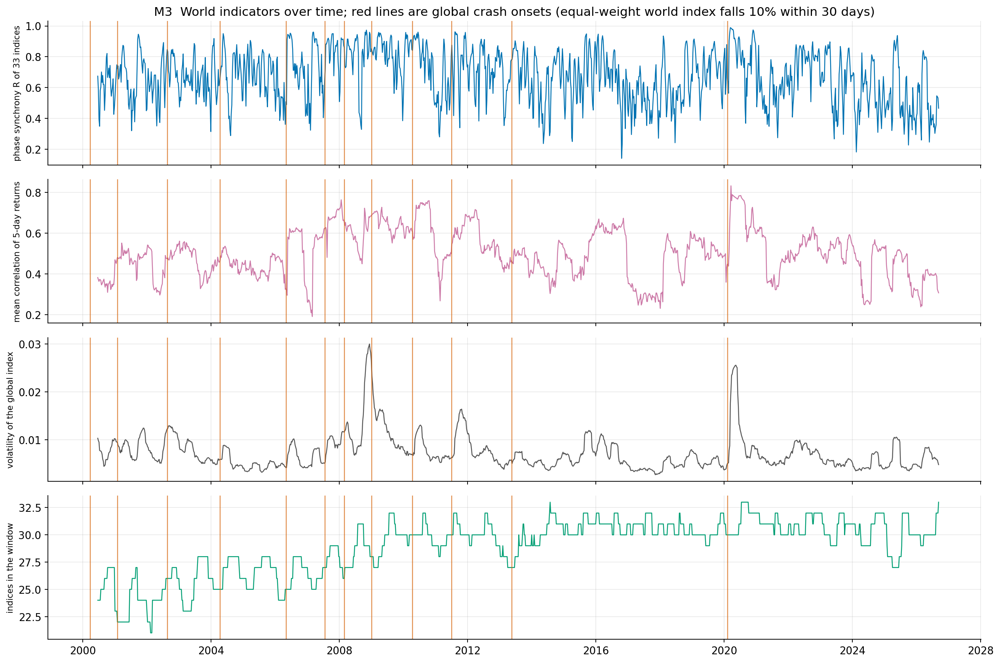
What you are seeing
From top: world phase synchrony, world mean correlation, volatility of the global index, and how many indices are in the window. Red vertical lines: global crash onsets.
Significance
Synchrony and correlation move in long regimes (high after 2008 and in 2020) that do not line up with the crash onsets. Volatility spikes come during or after the crashes. The early years have fewer indices, so values before 2008 are less comparable.
Indicators at each global crash onset (z-score against days -500 to -60)
| onset | fall within 30 days | synchrony z | correlation z | volatility z |
|---|---|---|---|---|
| 2000-03-27 | -0.11 | - | - | - |
| 2001-01-31 | -0.11 | - | - | - |
| 2002-08-22 | -0.13 | 1.42 | 0.43 | 2.10 |
| 2004-04-13 | -0.11 | -0.30 | 0.05 | -0.94 |
| 2006-05-09 | -0.14 | -1.32 | -2.64 | -0.47 |
| 2007-07-23 | -0.11 | -0.24 | 1.29 | -0.32 |
| 2008-02-27 | -0.10 | 0.71 | 0.87 | 2.09 |
| 2009-01-06 | -0.12 | 0.42 | 0.82 | 7.41 |
| 2010-04-14 | -0.13 | 0.30 | -0.26 | -1.05 |
| 2011-07-04 | -0.16 | 0.32 | -1.08 | -0.93 |
| 2013-05-22 | -0.11 | 0.29 | -1.62 | -1.02 |
| 2020-02-12 | -0.33 | 0.03 | -1.10 | -0.56 |
Correlation with the next 30 days' drawdown, all dates
| indicator | Spearman | CI low | CI high | partial given volatility | CI low | CI high | dates | quarters |
|---|---|---|---|---|---|---|---|---|
| world phase synchrony | 0.002 | -0.092 | 0.099 | -0.063 | -0.134 | 0.012 | 1363 | 106 |
| world mean correlation | 0.010 | -0.112 | 0.122 | -0.085 | -0.198 | 0.040 | 1363 | 106 |
| world volatility | 0.115 | -0.016 | 0.225 | - | - | - | 1363 | 106 |
Result: world synchrony and world correlation do not anticipate global drawdowns (correlations within 0.01 of zero, intervals about plus or minus 0.1). With 12 global crashes, an event-based test would have no power.
Real markets: collective against single-stock variance
exploratorynegative resultZ1 found that the collective signal carries the warning and single units often do not. The market version, written into the script before it was run: the variance of the index (collective) should separate crash onsets from the nulls better than the median variance of the individual stocks (single units).
Indicators: index return variance, median over stocks of each stock's return variance, and their ratio (the collective share of variance, close to the mean pairwise correlation). Same events, nulls and bootstrap as M1. The comparison is a paired bootstrap of the AUC difference over calendar quarters.
Collective minus unit
| score | null | AUC difference | CI low | CI high | p (one-sided) |
|---|---|---|---|---|---|
| trend | all non-crash dates | 0.0214 | -0.0042 | 0.0473 | 0.0505 |
| trend | volatility-matched dates | 0.0158 | -0.0095 | 0.0423 | 0.1135 |
| trend | peaks not followed by a crash | 0.0050 | -0.0212 | 0.0301 | 0.3395 |
| level | all non-crash dates | 0.0281 | -0.0075 | 0.0605 | 0.0575 |
| level | volatility-matched dates | 0.0185 | -0.0177 | 0.0531 | 0.1545 |
| level | peaks not followed by a crash | 0.0031 | -0.0324 | 0.0360 | 0.4225 |
All AUCs
| indicator | score | null | AUC | CI low | CI high | p (one-sided) | events |
|---|---|---|---|---|---|---|---|
| index variance | trend | all non-crash dates | 0.633 | 0.537 | 0.721 | 0.002 | 301 |
| index variance | trend | volatility-matched dates | 0.622 | 0.528 | 0.718 | 0.007 | 301 |
| index variance | trend | peaks not followed by a crash | 0.572 | 0.485 | 0.655 | 0.051 | 301 |
| index variance | level | all non-crash dates | 0.631 | 0.541 | 0.715 | 0.004 | 301 |
| index variance | level | volatility-matched dates | 0.606 | 0.509 | 0.700 | 0.015 | 301 |
| index variance | level | peaks not followed by a crash | 0.564 | 0.477 | 0.650 | 0.070 | 301 |
| median stock variance | trend | all non-crash dates | 0.612 | 0.509 | 0.706 | 0.016 | 301 |
| median stock variance | trend | volatility-matched dates | 0.607 | 0.508 | 0.704 | 0.018 | 301 |
| median stock variance | trend | peaks not followed by a crash | 0.567 | 0.472 | 0.663 | 0.084 | 301 |
| median stock variance | level | all non-crash dates | 0.602 | 0.507 | 0.699 | 0.016 | 301 |
| median stock variance | level | volatility-matched dates | 0.587 | 0.488 | 0.683 | 0.047 | 301 |
| median stock variance | level | peaks not followed by a crash | 0.561 | 0.469 | 0.649 | 0.088 | 301 |
| collective share of variance | trend | all non-crash dates | 0.616 | 0.543 | 0.684 | 0.000 | 301 |
| collective share of variance | trend | volatility-matched dates | 0.606 | 0.533 | 0.673 | 0.001 | 301 |
| collective share of variance | trend | peaks not followed by a crash | 0.564 | 0.491 | 0.630 | 0.039 | 301 |
| collective share of variance | level | all non-crash dates | 0.614 | 0.541 | 0.679 | 0.001 | 301 |
| collective share of variance | level | volatility-matched dates | 0.594 | 0.516 | 0.660 | 0.012 | 301 |
| collective share of variance | level | peaks not followed by a crash | 0.566 | 0.495 | 0.638 | 0.035 | 301 |
Result: the difference has the predicted sign in all six comparisons but is small (at most 0.028) and never significant. In real markets single stocks' variance rises with the index, because one common factor drives both, so the sharp contrast of the oscillator populations does not appear.
Four hypotheses from the simulations, tested on real markets
exploratoryFour predictions taken from the simulations and tested on the same events and nulls as M1, each written into the script before it was run. Exploratory: no correction across the four.
- H5 (from Z3): if a market near a crash behaved like a forced oscillator losing its damping, the lag-1 autocorrelation of its price level (a position) would fall before crashes. Prediction AUC < 0.5.
- H9 (from O5 and Gomez-Gardenes 2011): explosive synchrony needs the best-connected units to be the fastest. fd_corr = correlation, across stocks, between a stock's total correlation with the others and its volatility. Predictions: positive on average, and rising before crashes.
- H1 (from K_c = 2 gamma): a narrower spread of natural frequencies is closer to synchrony; drift_disp = spread of the stocks' 60-day mean returns divided by their median volatility. Prediction: falls before crashes.
- H8 (from the atlas): the most strongly coupled units lock first; below.
| indicator | prediction | score | null | AUC | CI low | CI high | events |
|---|---|---|---|---|---|---|---|
| ac1_price | AUC < 0.5 | trend | all non-crash dates | 0.487 | 0.421 | 0.557 | 310 |
| ac1_price | AUC < 0.5 | trend | volatility-matched dates | 0.486 | 0.416 | 0.558 | 310 |
| ac1_price | AUC < 0.5 | trend | peaks not followed by a crash | 0.458 | 0.394 | 0.529 | 310 |
| ac1_price | AUC < 0.5 | level | all non-crash dates | 0.451 | 0.380 | 0.528 | 310 |
| ac1_price | AUC < 0.5 | level | volatility-matched dates | 0.450 | 0.378 | 0.523 | 310 |
| ac1_price | AUC < 0.5 | level | peaks not followed by a crash | 0.457 | 0.388 | 0.531 | 310 |
| fd_corr | AUC > 0.5 | trend | all non-crash dates | 0.498 | 0.420 | 0.578 | 301 |
| fd_corr | AUC > 0.5 | trend | volatility-matched dates | 0.495 | 0.421 | 0.580 | 301 |
| fd_corr | AUC > 0.5 | trend | peaks not followed by a crash | 0.482 | 0.407 | 0.563 | 301 |
| fd_corr | AUC > 0.5 | level | all non-crash dates | 0.514 | 0.449 | 0.584 | 301 |
| fd_corr | AUC > 0.5 | level | volatility-matched dates | 0.515 | 0.448 | 0.580 | 301 |
| fd_corr | AUC > 0.5 | level | peaks not followed by a crash | 0.503 | 0.442 | 0.568 | 301 |
| drift_disp | AUC < 0.5 | trend | all non-crash dates | 0.490 | 0.415 | 0.567 | 301 |
| drift_disp | AUC < 0.5 | trend | volatility-matched dates | 0.485 | 0.409 | 0.562 | 301 |
| drift_disp | AUC < 0.5 | trend | peaks not followed by a crash | 0.526 | 0.456 | 0.591 | 301 |
| drift_disp | AUC < 0.5 | level | all non-crash dates | 0.485 | 0.411 | 0.556 | 301 |
| drift_disp | AUC < 0.5 | level | volatility-matched dates | 0.490 | 0.418 | 0.563 | 301 |
| drift_disp | AUC < 0.5 | level | peaks not followed by a crash | 0.512 | 0.443 | 0.577 | 301 |
H5, H1: every interval includes 0.5 (H5 lies on the predicted side, 0.45 to 0.49). Not detected.
H9: where real markets sit
| market | mean fd_corr | share of windows positive | crashes per decade |
|---|---|---|---|
| au_asx200 | -0.312 | 0.064 | 3.745 |
| br_b3 | 0.002 | 0.498 | 9.363 |
| ca_tsx60 | -0.162 | 0.241 | 4.120 |
| ch_smi | 0.033 | 0.516 | 5.618 |
| crypto | -0.356 | 0.154 | 7.502 |
| de_dax | 0.007 | 0.536 | 8.614 |
| es_ibex35 | -0.078 | 0.375 | 7.490 |
| eu_stoxx50 | 0.057 | 0.609 | 6.678 |
| fr_cac40 | 0.025 | 0.545 | 6.741 |
| hk_hsi | -0.129 | 0.356 | 8.988 |
| in_nifty50 | 0.202 | 0.830 | 6.316 |
| it_ftsemib | 0.026 | 0.547 | 8.614 |
| jp_largecap | 0.056 | 0.583 | 9.363 |
| kr_kospi200 | -0.049 | 0.427 | 8.240 |
| nl_aex | 0.157 | 0.678 | 5.618 |
| se_omx30 | -0.152 | 0.308 | 7.295 |
| sg_sti | -0.125 | 0.291 | 4.120 |
| uk_ftse100 | -0.068 | 0.412 | 3.745 |
| uk_ftse250 | -0.290 | 0.041 | 6.367 |
| us_sp400_mid | -0.198 | 0.096 | 5.244 |
| us_sp500 | -0.107 | 0.330 | 5.244 |
| us_sp600_small | -0.243 | 0.064 | 7.491 |
Result: no crash warning (AUC about 0.5). The sign of fd_corr is negative in most markets, but a check (M5c) shows that this is mechanical: a stock with a large idiosyncratic part of its volatility has lower correlations with everything. Splitting each stock's volatility into a systematic part (|beta| times the market's volatility) and an idiosyncratic part, strength rises strongly with systematic volatility and falls with idiosyncratic volatility in every market checked:
| market | with total volatility | with systematic volatility | with idiosyncratic volatility |
|---|---|---|---|
| au_asx200 | -0.310 | 0.520 | -0.466 |
| kr_kospi200 | -0.046 | 0.681 | -0.346 |
| uk_ftse250 | -0.291 | 0.595 | -0.521 |
| us_sp500 | -0.107 | 0.550 | -0.440 |
So, measured by systematic volatility, the best-connected stocks are the most volatile, as studies of stock-network centrality report, and markets sit in the frequency-degree regime that Gomez-Gardenes et al. associate with explosive synchronisation. That regime does not, by itself, give a crash warning here.
H8: do the most strongly coupled markets crash first?
For each of the 11 global crashes, the Spearman correlation across national indices between coupling (correlation of 5-day returns with the world index over the prior 250 days) and how soon the index fell. Prediction: negative (coupled markets fall first). p: one-sided sign test across crashes.
| timing measure | mean Spearman | crashes with negative correlation | sign-test p |
|---|---|---|---|
| time to half of its own loss | -0.3378 | 10 of 11 | 0.0059 |
| time to -5%, loss size held fixed | -0.3213 | 10 of 11 | 0.0059 |
| time to half of its loss, time zone held fixed | -0.2697 | 10 of 11 | 0.0059 |
| time to half of its loss, Americas, Europe and Middle East only | -0.1118 | 8 of 11 | 0.1133 |
Result: negative in 10 of 11 crashes for every scale-free timing measure and with the time zone held fixed (p = 0.006), but only 8 of 11 (p = 0.11) inside the Americas, Europe and the Middle East. Part of the effect is regional: Asian markets are both less coupled to this world index and later. A hint consistent with oscillators locking in order of coupling, not a finding. At the level of single stocks, Smith (arXiv:0901.1392) found the 2008 decline spreading from central to peripheral stocks; the country-level version tested here was not found in a literature search.
Contagion order with more events (M5d)
Coupling recomputed against the world index without the market itself, and the test repeated with global drawdowns of 10% (the M5 design), 7% and 5%. rho: Spearman correlation between coupling and half-loss delay in each event; rho_given_utc: the same with the UTC offset partialled out; rho_west: Americas, Europe and the Middle East only. Mean over events with a bootstrap CI over events, and a one-sided sign test. The last three rows (added after the first run) ask whether the effect grows with the depth of the world drawdown.
| drawdown | measure | events | negative | mean | CI low | CI high | sign test p |
|---|---|---|---|---|---|---|---|
| 0.100 | rho | 11 | 10.000 | -0.335 | -0.468 | -0.164 | 0.006 |
| 0.100 | rho_given_utc | 11 | 10.000 | -0.267 | -0.381 | -0.120 | 0.006 |
| 0.100 | rho_west | 11 | 8.000 | -0.123 | -0.262 | 0.047 | 0.113 |
| 0.070 | rho | 18 | 12.000 | -0.175 | -0.306 | -0.037 | 0.119 |
| 0.070 | rho_given_utc | 18 | 11.000 | -0.094 | -0.223 | 0.038 | 0.240 |
| 0.070 | rho_west | 18 | 10.000 | -0.038 | -0.185 | 0.107 | 0.407 |
| 0.050 | rho | 27 | 15.000 | -0.089 | -0.194 | 0.017 | 0.351 |
| 0.050 | rho_given_utc | 27 | 14.000 | -0.032 | -0.132 | 0.064 | 0.500 |
| 0.050 | rho_west | 27 | 14.000 | -0.034 | -0.152 | 0.080 | 0.500 |
| 0.050 | dose-response: Spearman(world depth, rho) | 27 | - | -0.092 | -0.479 | 0.331 | - |
| 0.050 | dose-response: Spearman(world depth, rho_given_utc) | 27 | - | -0.144 | -0.544 | 0.293 | - |
| 0.050 | dose-response: Spearman(world depth, rho_west) | 27 | - | -0.230 | -0.639 | 0.204 | - |
Result. Leaving the market out of the world index changes nothing at the 10% threshold (10 of 11 events, also with time zones partialled out, p = 0.006). With smaller drawdowns the effect fades (12 of 18 at 7%, 15 of 27 at 5%), and the dose-response has the predicted sign but is not significant. Within the Americas, Europe and the Middle East it is not significant at any threshold. So the contagion order is confined to the largest global drawdowns, holds at only one threshold (the one fixed in M5's design, so not chosen after the fact) and rests on 11 events: suggestive, not established.
Does synchrony lead volatility, or follow it?
exploratoryDoes synchrony move first and volatility follow (the herding model), or the other way round (the usual finance reading: correlations rise because volatility does)? Not tested elsewhere in the repository.
Series: M1's indicators, sampled every 60 trading days so that consecutive values come from non-overlapping windows. Granger-style test per market: does the change of a synchrony measure over one block predict the change of log index variance over the next block, beyond the variance's own change (and the reverse)? Partial correlation, pooled over the 22 markets (Fisher z), 95% CI by bootstrap over markets.
| synchrony measure | direction | pooled partial r | CI low | CI high | markets positive | markets |
|---|---|---|---|---|---|---|
| absorption ratio | sync->vol | -0.027 | -0.067 | 0.019 | 7 | 22 |
| absorption ratio | vol->sync | 0.004 | -0.043 | 0.047 | 14 | 22 |
| Hilbert phase synchrony | sync->vol | 0.078 | 0.056 | 0.098 | 21 | 22 |
| Hilbert phase synchrony | vol->sync | -0.020 | -0.042 | 0.000 | 8 | 22 |
| mean correlation | sync->vol | -0.023 | -0.055 | 0.010 | 9 | 22 |
| mean correlation | vol->sync | -0.040 | -0.068 | -0.010 | 9 | 22 |
Robustness of the one lead found (M6b)
Extra controls (two own lags and the level of volatility, since the Hilbert window is 120 days and the variance window 60), the two halves of the period separately, and a placebo with the synchrony changes shuffled.
| measure | test | pooled partial r | CI low | CI high | markets positive | markets |
|---|---|---|---|---|---|---|
| Hilbert phase synchrony | full, extra controls | 0.059 | 0.041 | 0.077 | 20.000 | 22 |
| Hilbert phase synchrony | before 2013 | 0.027 | -0.005 | 0.059 | 12.000 | 19 |
| Hilbert phase synchrony | from 2013 | 0.081 | 0.055 | 0.104 | 20.000 | 22 |
| Hilbert phase synchrony | placebo (shuffled sync changes), 95% range | 0.000 | -0.010 | 0.011 | - | 22 |
| mean correlation | full, extra controls | -0.055 | -0.081 | -0.027 | 4.000 | 22 |
| mean correlation | before 2013 | -0.111 | -0.156 | -0.065 | 2.000 | 20 |
| mean correlation | from 2013 | -0.015 | -0.057 | 0.032 | 6.000 | 22 |
| mean correlation | placebo (shuffled sync changes), 95% range | 0.001 | -0.012 | 0.013 | - | 22 |
Does it depend on the frequency band? (M6c)
The Hilbert synchrony recomputed with two other bands, same test as M6b. The middle band (3 to 20 days) is the one fixed in DESIGN_MARKETS.md before M1.
| band (days) | pooled partial r | CI low | CI high | markets positive | markets |
|---|---|---|---|---|---|
| 2 to 10 | 0.075 | 0.062 | 0.089 | 22 | 22 |
| 3 to 20 | 0.059 | 0.040 | 0.077 | 20 | 22 |
| 5 to 40 | 0.076 | 0.049 | 0.105 | 19 | 22 |
Are the two opposite leads one effect? (M6d, a check made after M6b)
The changes of phase synchrony and of mean correlation are correlated (0.36 on average over markets), and their leads have opposite signs. Here each is tested with the change and level of the other added to M6b's controls.
| measure | other measure controlled | pooled partial r | CI low | CI high | markets positive | markets |
|---|---|---|---|---|---|---|
| Hilbert phase synchrony | none | 0.059 | 0.041 | 0.077 | 20 | 22 |
| Hilbert phase synchrony | mean correlation | 0.066 | 0.049 | 0.083 | 20 | 22 |
| Hilbert phase synchrony | absorption ratio | 0.059 | 0.040 | 0.077 | 20 | 22 |
| mean correlation | none | -0.055 | -0.082 | -0.027 | 4 | 22 |
| mean correlation | Hilbert phase synchrony | -0.059 | -0.085 | -0.031 | 3 | 22 |
| absorption ratio | none | -0.032 | -0.068 | 0.003 | 8 | 22 |
| absorption ratio | Hilbert phase synchrony | -0.032 | -0.069 | 0.005 | 8 | 22 |
Neither lead weakens when the other measure is controlled; both become slightly stronger. Phase alignment and correlation strength carry separate information about the next volatility change, with opposite signs. The absorption ratio (share of variance in the top eigenvectors) behaves like mean correlation but weaker, and its CI touches 0.
Does it improve a real volatility forecast? (M10)
The test a finance referee asks for first. Target: log mean squared index return over the next 20 trading days. Baseline: the HAR model (Corsi 2009), log mean squared return over the last 5, 22 and 66 days. Added: phase synchrony (level and 20-day change), mean correlation (level and change), or both. Expanding-window OLS refitted every 5 trading days, first forecast after 8 years, fitted only on targets already observed. Out-of-sample R2 gain = 1 minus the ratio of mean squared errors; CI by bootstrap over calendar quarters with all markets resampled together; the last two columns count markets with a gain and with a Diebold-Mariano statistic above 1.65.
| added to HAR | pooled out-of-sample R2 gain | CI low | CI high | markets with gain | markets significant | markets |
|---|---|---|---|---|---|---|
| sync | -0.0088 | -0.0188 | -0.0004 | 5 | 0 | 22 |
| corr | -0.0010 | -0.0187 | 0.0193 | 8 | 2 | 22 |
| both | -0.0110 | -0.0307 | 0.0129 | 3 | 1 | 22 |
Result: no. Phase synchrony makes the forecast slightly worse out of sample (pooled -0.9%, gain in 5 of 22 markets, none significant), and no market's gain beats a placebo with the synchrony series shifted in time. The in-sample lead of M6 is real but carries no information beyond the volatility history that HAR already uses over 66 days. This closes the M6 line as a forecasting result. Per-market table: data/m10_har_oos.csv.
Replication inside the trading day (M7, 1-minute data)
The same test on 30-minute blocks of the repository's minute data (SPY and 22 large US stocks, 2002 to 2026), within each session, time-of-day effects removed, CI by bootstrap over calendar months.
| measure | sample | partial r | CI low | CI high | blocks | months |
|---|---|---|---|---|---|---|
| sync | all non-crash dates | 0.0069 | -0.0028 | 0.0166 | 46711 | 286 |
| sync | before 2013 | -0.0042 | -0.0170 | 0.0110 | 19523 | 121 |
| sync | from 2013 | 0.0159 | 0.0033 | 0.0285 | 27188 | 165 |
| corr | all non-crash dates | 0.0132 | 0.0049 | 0.0222 | 46711 | 286 |
| corr | before 2013 | 0.0121 | -0.0024 | 0.0271 | 19523 | 121 |
| corr | from 2013 | 0.0163 | 0.0057 | 0.0281 | 27188 | 165 |
Result (daily): changes of Hilbert phase synchrony are followed by changes of volatility in the same direction, beyond volatility's own history, in 20 to 21 of 22 markets (partial r about 0.06 to 0.08); the placebo is 0 within 0.01; the effect sits mostly after 2013. Plain mean correlation does the opposite (a rise is followed by falling volatility), and nothing predicts synchrony from volatility. The effect does not depend on the band (2 to 10, 3 to 20 and 5 to 40 days all give 0.06 to 0.08). It is small (R^2 under 1%) and exploratory: a lead that is consistent across markets, not a usable warning. Prior work has used correlation-network synchronisation (minimum spanning tree length) to forecast realised volatility (Magner and co-authors, Complexity 2020 and REMEF 2022), so the claim here is narrower: the phase measure leads, while plain mean correlation, in this test, does not.
Result (intraday): the lead does not replicate over the full minute-data sample (phase synchrony partial r = 0.007, CI -0.003 to 0.017); from 2013 on it is small and positive (0.016, CI 0.003 to 0.028), and before 2013 it is zero. Mean correlation is slightly positive intraday, the opposite sign to the daily result. The only feature shared by both time scales is that the synchrony effect appears after 2013, which could reflect a change in market structure; it is too small to build on.
Four more oscillator predictions on market data
exploratorynegative resultFour more predictions taken from coupled-oscillator theory, each written down before running, tested on the cleaned data of all 22 markets with M1's crash events, nulls and quarter-cluster bootstrap.
- H10 frequency locking. In the Kuramoto model, synchrony means the units' effective frequencies merge.
freq_spreadis the interquartile range across stocks of each stock's instantaneous Hilbert frequency (band 3 to 20 days), averaged over 20 days. Prediction: it falls before crashes (AUC below 0.5), and a fall is followed by rising volatility (Granger partial r below 0). - H11 reciprocity of the lead-lag network. Stock i leads j when the correlation of today's return of i with tomorrow's return of j is significant. Reciprocity is the share of such links whose reverse link is also significant with the same sign. The main project's theory gives different folds for one-way and two-way coupling. Prediction, with no sign given: it changes before crashes.
- H12 sectors lock first (three US markets, GICS sectors). On networks, groups often lock before the
whole population does.
cluster_ratiois the mean correlation within sectors divided by the mean correlation between sectors. Prediction: it rises before crashes (AUC above 0.5). - H13 phase offsets. A locked Kuramoto unit sits at phase offset arcsin(w / KR), so faster units lead. Prediction: across stocks, the natural frequency (measured in the least-locked windows) correlates positively with the phase offset (measured in the most-locked windows), in most markets.
Crash warning (ROC AUC of the score at each crash onset against the three nulls)
Trend: Kendall tau of the indicator over the 250 days before the date. Level: the indicator's z-score against days t-500 to t-60. An AUC of 0.5 is chance. Each CI is a 95% bootstrap over calendar quarters.
| indicator | prediction | score | null | AUC | CI low | CI high | crashes |
|---|---|---|---|---|---|---|---|
| freq_spread | AUC < 0.5 | trend | all non-crash dates | 0.468 | 0.392 | 0.546 | 299 |
| freq_spread | AUC < 0.5 | trend | volatility-matched dates | 0.466 | 0.386 | 0.544 | 299 |
| freq_spread | AUC < 0.5 | trend | peaks not followed by a crash | 0.485 | 0.413 | 0.553 | 299 |
| freq_spread | AUC < 0.5 | level | all non-crash dates | 0.498 | 0.444 | 0.554 | 299 |
| freq_spread | AUC < 0.5 | level | volatility-matched dates | 0.499 | 0.441 | 0.553 | 299 |
| freq_spread | AUC < 0.5 | level | peaks not followed by a crash | 0.469 | 0.418 | 0.521 | 299 |
| reciprocity | AUC != 0.5 | trend | all non-crash dates | 0.511 | 0.460 | 0.563 | 301 |
| reciprocity | AUC != 0.5 | trend | volatility-matched dates | 0.509 | 0.453 | 0.569 | 301 |
| reciprocity | AUC != 0.5 | trend | peaks not followed by a crash | 0.510 | 0.460 | 0.558 | 301 |
| reciprocity | AUC != 0.5 | level | all non-crash dates | 0.518 | 0.475 | 0.562 | 301 |
| reciprocity | AUC != 0.5 | level | volatility-matched dates | 0.521 | 0.478 | 0.569 | 301 |
| reciprocity | AUC != 0.5 | level | peaks not followed by a crash | 0.515 | 0.473 | 0.555 | 301 |
| cluster_ratio | AUC > 0.5 | trend | all non-crash dates | 0.329 | 0.199 | 0.474 | 39 |
| cluster_ratio | AUC > 0.5 | trend | volatility-matched dates | 0.327 | 0.200 | 0.468 | 39 |
| cluster_ratio | AUC > 0.5 | trend | peaks not followed by a crash | 0.458 | 0.324 | 0.591 | 39 |
| cluster_ratio | AUC > 0.5 | level | all non-crash dates | 0.343 | 0.229 | 0.472 | 39 |
| cluster_ratio | AUC > 0.5 | level | volatility-matched dates | 0.350 | 0.237 | 0.474 | 39 |
| cluster_ratio | AUC > 0.5 | level | peaks not followed by a crash | 0.477 | 0.357 | 0.597 | 39 |
Lead of volatility (same test as M6b, with the same controls)
| indicator | pooled partial r | CI low | CI high | markets positive | markets |
|---|---|---|---|---|---|
| freq_spread | -0.037 | -0.053 | -0.022 | 4 | 22 |
| reciprocity | 0.009 | -0.016 | 0.035 | 12 | 22 |
| cluster_ratio | 0.143 | 0.101 | 0.167 | 3 | 3 |
Phase offsets against natural frequency (H13), per market
| market | Spearman (natural frequency, offset) | stocks |
|---|---|---|
| au_asx200 | 0.183 | 192 |
| br_b3 | 0.111 | 68 |
| ca_tsx60 | -0.283 | 59 |
| ch_smi | -0.038 | 20 |
| crypto | 0.073 | 39 |
| de_dax | -0.020 | 40 |
| es_ibex35 | 0.068 | 35 |
| eu_stoxx50 | 0.051 | 50 |
| fr_cac40 | -0.119 | 40 |
| hk_hsi | 0.327 | 85 |
| in_nifty50 | -0.012 | 50 |
| it_ftsemib | -0.020 | 40 |
| jp_largecap | 0.091 | 60 |
| kr_kospi200 | 0.148 | 200 |
| nl_aex | -0.201 | 25 |
| se_omx30 | -0.269 | 30 |
| sg_sti | 0.399 | 30 |
| uk_ftse100 | 0.207 | 100 |
| uk_ftse250 | 0.209 | 247 |
| us_sp400_mid | -0.034 | 399 |
| us_sp500 | -0.005 | 500 |
| us_sp600_small | 0.009 | 596 |
Result. None of the four gives a crash warning.
- H10. The frequency spread does not fall before crashes: every CI contains 0.5. It does lead volatility weakly, with the predicted sign: a narrowing spread is followed by rising volatility (pooled partial r -0.037, CI -0.053 to -0.022; positive in only 4 of 22 markets). This is the frequency-domain twin of the M6 phase-synchrony lead and is probably not independent of it.
- H11. Reciprocity is at chance in every comparison.
- H12. The sector ratio goes the opposite way to the prediction: it falls before US crashes (trend AUC 0.33, CI 0.20 to 0.47; only 39 crashes, three markets). Correlations between sectors catch up with those within sectors, so the market merges into one block instead of locking sector by sector. M8b shows this is the ordinary rise of mean correlation and nothing more: within-sector correlations are already high and have less room to rise, so the ratio falls whenever all correlations rise (its correlation over time with mean correlation is -0.42 to -0.72). With mean correlation regressed out, the ratio is at chance (table below). The same holds for its volatility lead, which rests on three markets only.
- H13. The phase-offset ordering is not seen: the correlation averages 0.040 and is positive in 12 of 22 markets. Stocks do not behave like locked oscillators with fixed natural frequencies.
Sector ratio against mean correlation (M8b, a check made after M8)
US crashes only (39), null of all non-crash dates. resid is the sector ratio with M1's mean correlation regressed out, market by market.
| indicator | score | AUC | CI low | CI high | crashes |
|---|---|---|---|---|---|
| cluster_ratio | trend | 0.329 | 0.203 | 0.479 | 39 |
| cluster_ratio | level | 0.343 | 0.227 | 0.464 | 39 |
| mean correlation | trend | 0.698 | 0.554 | 0.842 | 39 |
| mean correlation | level | 0.645 | 0.496 | 0.796 | 39 |
| resid | trend | 0.493 | 0.353 | 0.642 | 39 |
| resid | level | 0.501 | 0.376 | 0.639 | 39 |
Against all non-crash dates, mean correlation rises before these 39 US crashes (trend AUC 0.70). Against M1's null of market tops that were not followed by a crash it is near chance (AUC 0.47 to 0.61 in the three US markets, data/m1_per_market_auc.csv), so this is what any market top looks like. The sector structure adds nothing to it.
Explosive-synchronisation regime and flickering
exploratorynegative resultM9: the systematic frequency-degree correlation over time
M5c showed that, with systematic volatility, the best-connected stocks are the most volatile: the regime that
Gomez-Gardenes et al. (2011) link to explosive synchronisation. If the mechanism operates in markets, periods with a
stronger correlation should come before crashes, and before faster and deeper ones. fd_sys: in each
trailing 60-day window, the Spearman correlation across stocks between a stock's correlation strength and its
systematic volatility. Predictions written before running: AUC above 0.5; correlation with days from peak to
trough negative, with depth positive.
| score | null | AUC | CI low | CI high | crashes |
|---|---|---|---|---|---|
| trend | all non-crash dates | 0.466 | 0.411 | 0.521 | 301 |
| trend | volatility-matched dates | 0.460 | 0.402 | 0.518 | 301 |
| trend | peaks not followed by a crash | 0.493 | 0.445 | 0.544 | 301 |
| level | all non-crash dates | 0.487 | 0.433 | 0.539 | 301 |
| level | volatility-matched dates | 0.485 | 0.430 | 0.540 | 301 |
| level | peaks not followed by a crash | 0.490 | 0.441 | 0.541 | 301 |
| crash property | Spearman with fd_sys level at onset | CI low | CI high | crashes |
|---|---|---|---|---|
| days_to_trough | 0.038 | -0.092 | 0.176 | 301 |
| depth | -0.024 | -0.145 | 0.097 | 301 |
Result: null. fd_sys does not rise before crashes, and it is unrelated to how fast or how deep they are. Markets sit in the explosive frequency-degree regime all the time; how far into it they sit does not matter.
M11: flickering of the daily market order parameter
Between its fold and its onset the herding model is bistable, and noise can move it back and forth between the
synchronised and the incoherent state. Near a tipping point this flickering makes the state's distribution bimodal
and more variable (Scheffer et al., Nature 2009). A daily order parameter that needs no window: breadth b = share of
stocks up on the day minus 1/2; |2b| is near 0 on incoherent days and near 1 when stocks move as one, like the
Kuramoto R. Over the trailing 60 days: bc, the bimodality coefficient of |2b| (above 5/9 suggests two
modes); var, its variance; ltail, the share of days with more than 90% of stocks down.
Prediction written before running: all three rise before crashes against all three nulls.
| indicator | score | null | AUC | CI low | CI high | crashes |
|---|---|---|---|---|---|---|
| bc | trend | all non-crash dates | 0.527 | 0.480 | 0.570 | 295 |
| bc | trend | volatility-matched dates | 0.535 | 0.491 | 0.579 | 295 |
| bc | trend | peaks not followed by a crash | 0.502 | 0.462 | 0.540 | 295 |
| bc | level | all non-crash dates | 0.556 | 0.508 | 0.605 | 293 |
| bc | level | volatility-matched dates | 0.565 | 0.517 | 0.613 | 293 |
| bc | level | peaks not followed by a crash | 0.526 | 0.482 | 0.571 | 293 |
| variance | trend | all non-crash dates | 0.581 | 0.511 | 0.648 | 295 |
| variance | trend | volatility-matched dates | 0.578 | 0.507 | 0.649 | 295 |
| variance | trend | peaks not followed by a crash | 0.505 | 0.436 | 0.571 | 295 |
| variance | level | all non-crash dates | 0.568 | 0.504 | 0.632 | 293 |
| variance | level | volatility-matched dates | 0.554 | 0.485 | 0.617 | 293 |
| variance | level | peaks not followed by a crash | 0.514 | 0.453 | 0.578 | 293 |
| ltail | trend | all non-crash dates | 0.568 | 0.491 | 0.643 | 292 |
| ltail | trend | volatility-matched dates | 0.569 | 0.494 | 0.639 | 292 |
| ltail | trend | peaks not followed by a crash | 0.521 | 0.440 | 0.592 | 292 |
| ltail | level | all non-crash dates | 0.552 | 0.475 | 0.628 | 293 |
| ltail | level | volatility-matched dates | 0.554 | 0.478 | 0.631 | 293 |
| ltail | level | peaks not followed by a crash | 0.541 | 0.468 | 0.619 | 293 |
Result: weak, and not specific to crashes. Against all non-crash dates, the variance and the bimodality of breadth rise a little before crashes (AUC 0.55 to 0.58, some CIs above 0.5). Against market tops that were not followed by a crash they are at chance (0.50 to 0.54). Like the M1 indicators, they describe market tops in general, not the tops that turn into crashes.
Robustness runs on this machine
resultChecks that fit on this machine: Z1 at two other noise levels (48 runs each), and the Z2 ramps with stronger noise and slower ramps.
Collective variance against the strict null, three noise levels
| scenario | sigma = 0.1 (main run) | noise sigma = 0.05 | noise sigma = 0.2 |
|---|---|---|---|
| FitzHugh-Nagumo, single | 0.968 | 0.968 | 0.968 |
| FitzHugh-Nagumo, herding, collapse | 0.030 | - | - |
| Simple harmonic oscillator | 1.000 | 1.000 | 1.000 |
| Kuramoto with inertia, herding, collapse | 1.000 | - | - |
| Kuramoto with inertia, collapse | 1.000 | 1.000 | 1.000 |
| Kuramoto, adaptive, collapse | 1.000 | 1.000 | 1.000 |
| Kuramoto, onset | 0.991 | 0.931 | 0.999 |
| Ornstein-Uhlenbeck (reference) | 1.000 | 1.000 | 1.000 |
| Roessler, herding, collapse | 1.000 | - | - |
| Roessler population, phase sync | 0.955 | 0.973 | 0.944 |
| Stuart-Landau, adaptive, collapse | 1.000 | 1.000 | 1.000 |
| Stuart-Landau, amplitude death | 1.000 | 1.000 | 0.987 |
| Stuart-Landau, single | 1.000 | 1.000 | 1.000 |
| Stuart-Landau population, onset | 0.745 | 0.660 | 0.781 |
| Theta neurons, collapse of activity | 0.939 | 0.857 | 0.957 |
| van der Pol, herding, collapse | 1.000 | - | - |
| van der Pol population, onset | 0.927 | 0.935 | 0.984 |
| Winfree, oscillator death | 0.713 | 0.755 | 0.533 |
Z2 with stronger noise and slower ramps
Column "left the branch at" is (lam - lamb) / lamb at the moment the population leaves the branch: positive = before the fold (early), negative = after it (late). "Fraction early" counts runs that left before the fold.
| noise sigma | N | ramp time | left the branch at | sd | fraction early | runs |
|---|---|---|---|---|---|---|
| 0.1000 | 100 | 30000.0000 | -0.0013 | 0.0032 | 0.2500 | 16 |
| 0.1000 | 400 | 30000.0000 | 0.0005 | 0.0018 | 0.5625 | 16 |
| 0.1000 | 1600 | 30000.0000 | -0.0006 | 0.0012 | 0.3750 | 16 |
| 0.1000 | 1600 | 100000.0000 | 0.0009 | 0.0006 | 0.9375 | 16 |
| 0.3000 | 100 | 30000.0000 | 0.0012 | 0.0082 | 0.5000 | 16 |
| 0.3000 | 400 | 30000.0000 | -0.0119 | 0.0043 | 0.0000 | 16 |
| 0.3000 | 1600 | 30000.0000 | -0.0155 | 0.0022 | 0.0000 | 16 |
| 0.3000 | 1600 | 100000.0000 | -0.0132 | 0.0015 | 0.0000 | 16 |
| 0.5000 | 100 | 30000.0000 | -0.0085 | 0.0124 | 0.1875 | 16 |
| 0.5000 | 400 | 30000.0000 | -0.0322 | 0.0059 | 0.0000 | 16 |
| 0.5000 | 1600 | 30000.0000 | -0.0402 | 0.0028 | 0.0000 | 16 |
| 0.5000 | 1600 | 100000.0000 | -0.0387 | 0.0017 | 0.0000 | 16 |
Cluster runs (Ada): larger populations, noise and ramp speed
resultItems A1 to A3 of the compute list, run on the GPU path after it was checked against the CPU kernels (zoo_gpu_check.py, docs/ADA_RUN_2026-10-24.md).
A1. Variance warning against population size (strict null)
ROC AUC of the variance of the collective signal and of one unit's signal against the ramp-away null, as in section Z1, at N = 400 (48 runs) and at the larger sizes (100 runs each, on the GPU, ZOO_GPU=1). The question: does the collective warning hold as finite-size noise falls, and does the single-unit failure persist?
| scenario | collective, N = 400 | one unit, N = 400 | collective, N = 1600 | one unit, N = 1600 | collective, N = 6400 | one unit, N = 6400 |
|---|---|---|---|---|---|---|
| FitzHugh-Nagumo, single | 0.968 | 0.968 | 0.982 | 0.982 | 0.982 | 0.982 |
| FitzHugh-Nagumo, herding, collapse | 0.030 | 0.377 | 0.000 | 0.359 | 0.000 | 0.326 |
| Simple harmonic oscillator | 1.000 | 1.000 | 1.000 | 1.000 | 1.000 | 1.000 |
| Kuramoto with inertia, herding, collapse | 1.000 | 0.522 | 1.000 | 0.552 | 1.000 | 0.474 |
| Kuramoto with inertia, collapse | 1.000 | 0.515 | 1.000 | 0.443 | 1.000 | 0.472 |
| Kuramoto, adaptive, collapse | 1.000 | 0.959 | 1.000 | 0.999 | 0.999 | 1.000 |
| Kuramoto, onset | 0.991 | 0.488 | 0.999 | 0.476 | 0.999 | 0.547 |
| Ornstein-Uhlenbeck (reference) | 1.000 | 1.000 | 1.000 | 1.000 | 1.000 | 1.000 |
| Roessler, herding, collapse | 1.000 | 0.804 | 1.000 | 0.808 | 1.000 | 0.764 |
| Roessler population, phase sync | 0.955 | 0.998 | 0.978 | 0.998 | 0.995 | 1.000 |
| Stuart-Landau, adaptive, collapse | 1.000 | 1.000 | 1.000 | 0.988 | 1.000 | 1.000 |
| Stuart-Landau, amplitude death | 1.000 | 0.000 | 1.000 | 0.000 | 1.000 | 0.000 |
| Stuart-Landau, single | 1.000 | 1.000 | 1.000 | 1.000 | 1.000 | 1.000 |
| Stuart-Landau population, onset | 0.745 | 0.002 | 0.725 | 0.389 | 0.734 | 0.012 |
| Theta neurons, collapse of activity | 0.939 | 1.000 | 0.922 | 1.000 | 0.966 | 1.000 |
| van der Pol, herding, collapse | 1.000 | 0.000 | 1.000 | 0.000 | 1.000 | 0.001 |
| van der Pol population, onset | 0.927 | 0.000 | 0.989 | 0.000 | 0.993 | 0.000 |
| Winfree, oscillator death | 0.713 | 0.009 | 0.726 | 0.000 | 0.987 | 0.000 |
A2. Variance warning over noise level and ramp speed (N = 400, 100 runs)
One row per setting. Ramp time is a multiple of the main run's. Lowest collective AUC over the scenarios, which scenario, how many scenarios fall below 0.7, and in how many one unit's variance falls instead of rising (AUC below 0.5).
| noise sigma | ramp time x | lowest collective AUC | where | collective below 0.7 | scenarios | one unit below 0.5 |
|---|---|---|---|---|---|---|
| 0.050 | 0.500 | 0.549 | Stuart-Landau population, onset | 1 | 18 | 9 |
| 0.050 | 2.000 | 0.803 | Stuart-Landau population, onset | 0 | 18 | 6 |
| 0.050 | 4.000 | 0.927 | Stuart-Landau population, onset | 0 | 18 | 6 |
| 0.100 | 0.500 | 0.045 | FitzHugh-Nagumo, herding, collapse | 2 | 18 | 8 |
A3. Z2 ramps up to N = 819200
Where the population leaves the synchronised branch, (lam - lamb) / lamb (positive = before the fold), and the median variance ratio just before leaving against far from the fold, at the main ramp time. Sizes up to 12800 are the workstation runs.
| N | runs | left the branch at | sd | variance ratio near / far |
|---|---|---|---|---|
| 100 | 16 | -0.0134 | 0.0040 | 1.7322 |
| 200 | 16 | -0.0109 | 0.0039 | 1.9942 |
| 400 | 16 | -0.0096 | 0.0022 | 1.7895 |
| 800 | 16 | -0.0089 | 0.0015 | 1.9096 |
| 1600 | 16 | -0.0084 | 0.0014 | 2.1216 |
| 3200 | 16 | -0.0083 | 0.0008 | 1.9351 |
| 6400 | 16 | -0.0075 | 0.0006 | 1.6614 |
| 12800 | 16 | -0.0076 | 0.0005 | 1.1859 |
| 25600 | 16 | -0.0076 | 0.0004 | 0.9554 |
| 51200 | 16 | -0.0076 | 0.0002 | 0.7055 |
| 102400 | 16 | -0.0075 | 0.0002 | 0.4952 |
| 204800 | 16 | -0.0076 | 0.0001 | 0.4089 |
| 409600 | 16 | -0.0075 | 0.0001 | 0.3512 |
| 819200 | 16 | -0.0075 | 0.0001 | 0.3106 |
Main project: two checks run on this workstation
resultTwo checks of the main project's fold measurement that its plan listed as not run, both sized for this workstation and run from here. The fold ratio is the measured backward threshold divided by the exact all-to-all value of Zou and Wang (PRE 102, 012219, 2020); bisection tolerance 0.2%.
All-to-all validation (configs/paperA_A0_meanfield.yaml)
Run directory results/paperA_A0/20261021-222955_edf282f-dirty/.
| variant | p | k | N | fold ratio | CI low | CI high | sd | seeds |
|---|---|---|---|---|---|---|---|---|
| meanfield | 0.5000 | 0 | 1000 | 0.9995 | 0.9995 | 0.9995 | 0.0000 | 5 |
| meanfield | 0.5000 | 0 | 10000 | 0.9995 | 0.9995 | 0.9995 | 0.0000 | 5 |
| meanfield | 1.0000 | 0 | 1000 | 0.9995 | 0.9995 | 0.9995 | 0.0000 | 5 |
| meanfield | 1.0000 | 0 | 10000 | 0.9995 | 0.9995 | 0.9995 | 0.0000 | 5 |
| meanfield | 2.0000 | 0 | 1000 | 0.9995 | 0.9995 | 0.9995 | 0.0000 | 5 |
| meanfield | 2.0000 | 0 | 10000 | 0.9995 | 0.9995 | 0.9995 | 0.0000 | 5 |
Convergence of the fold estimator (configs/paperA_convergence.yaml)
Run directory results/paperA_convergence/20261021-223937_edf282f-dirty/.
| variant | p | k | N | fold ratio | CI low | CI high | sd | seeds |
|---|---|---|---|---|---|---|---|---|
| baseline | 1.0000 | 24 | 3000 | 1.0572 | 1.0351 | 1.0793 | 0.0139 | 4 |
| clip_600 | 1.0000 | 24 | 3000 | 1.0576 | 1.0360 | 1.0793 | 0.0136 | 4 |
| dt_0.01 | 1.0000 | 24 | 3000 | 1.0572 | 1.0351 | 1.0793 | 0.0139 | 4 |
| random_lorentzian_clip_60 | 1.0000 | 24 | 3000 | 1.0356 | 0.9980 | 1.0732 | 0.0236 | 4 |
| t_relax_240 | 1.0000 | 24 | 3000 | 1.0572 | 1.0351 | 1.0793 | 0.0139 | 4 |
| t_relax_960 | 1.0000 | 24 | 3000 | 1.0572 | 1.0351 | 1.0793 | 0.0139 | 4 |
| threshold_0.40 | 1.0000 | 24 | 3000 | 1.0572 | 1.0351 | 1.0793 | 0.0139 | 4 |
| threshold_0.70 | 1.0000 | 24 | 3000 | 1.0572 | 1.0351 | 1.0793 | 0.0139 | 4 |
Result
- All-to-all: the harness reproduces the exact fold at every exponent and size; fold ratio 0.9995 to 0.9995, within the 0.2% bisection tolerance.
- Convergence: 6 of 7 variants move the fold by less than the 0.2% tolerance (time step, relaxation time, threshold, frequency clip).
- Systematic: variant
random_lorentzian_clip_60moves the fold ratio by -2.0% (1.0356, CI 0.998 to 1.073). Random frequency draws add sample-to-sample disorder that the deterministic quantiles remove; with 4 seeds the shift is within that extra noise, but it exceeds the tolerance and should be stated with any fold measurement made from quantile frequencies.
What could be published, and what not
open questionCandidates, in order of strength
- Herding folds of every oscillator family from one phase-reduced equation (O1, O3, O3c, O3d). One number per family, the first odd Fourier coefficient a1 of its interaction function, maps the exact Kuramoto herding fold onto every limit-cycle family. Once sweep-speed delay is extrapolated away, the measured folds agree within a few percent for Kuramoto, Kuramoto with inertia, van der Pol and Roessler. The remaining gaps are specific: Stuart-Landau -10% (amplitude relaxation, O3b), FitzHugh-Nagumo -19% (strongly non-sinusoidal adjoint). The collapse delay after a slow ramp is predicted with no free parameter from the exact Ott-Antonsen equation (O3d). Circuit-breaker durations from the unstable middle branch work in 14 or 15 of 15 cells for most families (O4). A literature search found neither the cross-family fold mapping nor the slow-passage application. Fits Chaos or Physical Review E. Needed before submission: O3e (why Stuart-Landau is 10% off) and O6 (sparse networks), both on the Ada list.
- A benchmark of early-warning indicators across coupled-oscillator families (Z1), with a strict null. Collective variance warned in the first 14 transitions at the default noise; lag-1 autocorrelation, AR(2) and spectral indicators each fail or reverse somewhere; single units often show the opposite of a warning. Two caveats: at noise 0.2 the weakest case drops to chance (Winfree death, AUC 0.53), and among the four herding scenarios added later (A9) the collective variance falls, not rises, before the FitzHugh-Nagumo herding collapse (AUC 0.03 at N = 400 and 0.00 at N = 1600). The reason is found: the event-based phase puts a ripple at the spiking period into R, and averaged over one period the collective variance warns again (AUC 0.86). So the claim becomes "collective variance of the cycle-averaged signal warns in every transition tested", with the size and noise scans (A1, A2) on the page.
- An exact result on lag-1 autocorrelation for forced mechanical oscillators (Z3). Position: never a warning below Nyquist; velocity: a warning up to w dt = 2.03. Checked symbolically, against the exact covariance and in simulation. A short note, or a section of item 2. Search the mechanical and power-system literature once more first.
- Why explosive desynchronisation gives only a weak warning (Z2, O3d), with the market data as the test. Exact branch, a slow mode present but diluted in the variance, and late collapse on the 2/3 slow-passage law. The model predicts small warnings, and the registered market test (M1, 310 crashes, 22 markets) finds none beyond variance. Needs A3 and A8.
Market results: what they support
- A well-powered negative result (M1 registered; M5, M8, M9, M11 exploratory). About 30 indicators motivated by oscillator theory were tested: phase synchrony, eigenvalue and autoregressive rates, frequency locking, frequency-degree regime, lead-lag reciprocity, sector locking, phase offsets, flickering. None warns before crashes once compared with market tops that were not followed by a crash. This supports item 4; it is not a paper on its own.
- Contagion order (M5, M5b, M5d): in 10 of 11 global drawdowns of at least 10%, national indices more coupled to the rest of the world lost half of their fall sooner (p = 0.006), also with time zones partialled out and the market left out of the world index. It fades for smaller drawdowns and is not significant within the Americas-Europe band. Suggestive; a short section at most, with these caveats.
- Phase synchrony leads volatility (M6 to M6d): consistent across markets and bands, independent of mean correlation, but tiny, mostly after 2013, and of no use out of sample against the HAR model (M10). Close to Magner and co-authors' result with network synchronisation. Not a contribution on its own.
Not publishable as it stands
- Any claim that synchrony, phase coherence or eigenvalue indicators predict real crashes: the tests say no.
- The finite-N early-tipping law N-2/3: not observed at the noise level used.
- The frequency-degree sign of markets (M5): mechanical (M5c), and its systematic version predicts nothing (M9).
- The sector-ratio fall before US crashes (M8): only the rise of mean correlation (M8b).
- Multiple testing: the exploratory market tests (M2, M5 to M11) were not corrected across hypotheses. Read every single exploratory CI that excludes chance with that in mind.
What needs the Ada cluster
open questionRuns that do not fit on this workstation (16 cores, 15 GB). Costs are scaled from
throughput measured here. Full details, and what is not limited by compute, are in ADA_COMPUTE.md;
SLURM scripts are in ada/.
| item | what | why it matters | cost | script |
|---|---|---|---|---|
| A1 | Z1 at N = 1600, 6400 and 25600, 100 runs per condition (all 18 scenarios, including the four herding scenarios added later) | Shows whether the indicator table (collective variance works everywhere, single units fail) holds as populations grow, and whether AUC rises with N as finite-size noise falls. Needed before the zoo benchmark can be submitted | about 1400 core-hours (1100 for the first 14 scenarios, scaled by 18/14) | ada/zoo_size_scan.sbatch |
| A2 | Z1 at noise 0.05, 0.1, 0.2 x ramp time 0.5, 2, 4 times the default, N = 400, 100 runs | Shows the table does not depend on one noise level and one ramp speed. A reduced version (two noise levels, 48 runs) ran locally, section R of index.html | about 250 core-hours (18 h on the workstation) | ada/zoo_robustness.sbatch |
| A3 | Z2 ramps at N = 25600 to 819200, 16 runs each | Whether the delay past the fold keeps shrinking with N and whether the variance ratio before collapse changes: decides whether the weak warning is a finite-size effect | about 270 core-hours; the single run at N = 819200 takes about 8.5 h on one core | ada/z2_large_n.sbatch |
| A4 | Branch shift on sparse graphs at k = 48, 96, 192 with N up to 800000 (main project, item 2 of docs/PROGRESS.md) | Settles whether the reaction term of the finite-connectivity theory converges on undirected graphs | about 10 GPU-hours (estimate from the A7 rate) | configs/paperA_branch_ada_gpu.yaml (esfc run, GPU) |
| A5 | Full fold grid of the main project: 30 seeds, four sizes, four exponents; low-connectivity bistability; clustered and heterogeneous graphs (docs/PROGRESS.md, "Not done" item 3) | The fold coefficient with real error bars, the predicted critical connectivity, and the clustering prediction | not yet measured; configure a pilot of one cell first and scale from its time | to write, from configs/paperA_A1_pilot.yaml |
| A6 | Zoo on sparse networks (k = 12 to 96) instead of mean field, for the Kuramoto and Stuart-Landau scenarios | Real markets and power grids are not all-to-all; neighbour sums cost N k per step, so this is 10 to 100 times Z1 | rough estimate, not measured: several hundred to about 1000 core-hours at N = 1600 for four values of k | to write (needs a sparse version of the population kernels in zoo.py) |
| A7 | O6: herding fold on sparse random regular graphs for every family; the design run (N = 2000, k = 8 to 64) and N = 20000 with k up to 192 | Tests whether the finite-connectivity coefficient a of the main project is the same for every family, as phase reduction predicts (a1 cancels in the ratio) | design run: not finished after 21 min on 8 cores on the shared workstation, estimated 10 to 20 core-hours; N = 20000 with k up to 192 is about 30 to 60 times that, so roughly 500 to 1000 core-hours (estimate: cost scales with N k per step) | ada/o6_sparse.sbatch (environment overrides O6_N, O6_KS, O6_SEEDS, O6_TAG) |
| A8 | Z2 ramps at noise 0.1, 0.3, 0.5 (N = 100 to 1600, 16 runs) | Whether the slow-passage delay and the weak variance warning depend on the noise level | about 12 core-hours per noise level from the Z2 rate above (the 0.1 run had used about 10 core-hours when stopped), 36 in all | ada/z2_noise.sbatch |
| A9 | Z1 for the four herding scenarios added after Z1 (van der Pol, Roessler, FitzHugh-Nagumo, Kuramoto with inertia), N = 400, 48 runs | Completes the indicator table for herding in every family | about 2 core-hours (4/14 of the Z1 cost) | ada/remaining_studies.sbatch |
| A10 | O5: frequency-degree correlation on a Barabasi-Albert network (N = 1000), every family | The main project's S1 and S8 for every family | not measured; estimated 10 to 30 core-hours (Kuramoto needs dt = 0.002) | ada/remaining_studies.sbatch |
| A11 | O9: propagation of a local push on Winfree and theta-neuron networks | The a2 test of Hens et al. 2019 for the two separable couplings | not finished after 29 min on 2 cores; estimated under 10 core-hours | ada/remaining_studies.sbatch |
| A12 | O3e: exact mean-field self-consistency of the Stuart-Landau herding branch | Whether amplitudes explain the 10% gap between the measured fold and phase reduction | serial; estimated a few hours on one core | ada/remaining_studies.sbatch |
Files
Every file of this folder is described in README.md. Data files are in data/ (CSV
and parquet; the run logs in data/logs/), figures in figures/, cluster scripts in
ada/. Market prices are not stored in the repository (licence); they come from
research/empirical/fetch_markets.py.